Chapter 2: Physical & Data Link Layers — Cables, Signals, Ethernet & Switching¶
Every network message eventually becomes electrical pulses, flashes of light or radio waves travelling over something physical. This chapter starts at the bottom of the stack: the cables, connectors and signals of Layer 1, then climbs to Layer 2, where Ethernet, MAC addresses and switches move frames between devices on the same local network. Master these foundations and everything above them becomes much easier to troubleshoot.
2.1 Copper Cabling¶
Most office and home networks use copper cables: thin copper wires that carry data as tiny electrical signals. Twisted-pair cable twists wires together in pairs so that outside electrical noise cancels out. Cables come in 'categories' (Cat5e, Cat6 and so on); a higher category can carry faster signals more cleanly.
Cat5e vs Cat6 vs Cat6a
| Cat5e | Cat6 | Cat6a | |
|---|---|---|---|
| Rated frequency | 100 MHz | 250 MHz | 500 MHz |
| ISO/IEC class | Class D | Class E | Class EA |
| 1 Gb/s at 100 m | Yes | Yes | Yes |
| 2.5/5GBASE-T | 2.5G yes; 5G often | Yes | Yes |
| 10GBASE-T reach | Not rated | About 37-55 m | Full 100 m |
| Best for | Existing homes | Budget desk drops | New builds, Wi-Fi 7 APs |
Cat6a is the first category rated for 10GBASE-T over the full 100 m.
Think of it like…
Twisted pairs are like two people walking arm in arm through a noisy crowd: any shove hits both equally, so they stay together and the message between them survives.
Real-world example
Priya is cabling a new dental surgery. She runs Cat6a from the patch panel in the comms cupboard to each treatment room; the longest run is 82 m, safely under the 100 m channel limit. Both ends are terminated with the T568B pin order, making them straight-through cables. When she tests one run, the certifier shows it passes 10GBASE-T, so the surgery can upgrade its switch later without re-cabling.
How it works¶
- Data is sent as voltage changes on pairs of copper wires (Ethernet cable has 4 pairs, 8 wires).
- Each pair carries a signal and its mirror image; the receiver subtracts them, cancelling noise that hit both wires.
- The tighter the twists and the better the shielding, the higher the frequency (MHz) the cable supports.
- Wires are punched into a patch panel or crimped into RJ45 plugs following the T568A or T568B colour order.
- A channel (patch cord + permanent link + patch cord) must be 100 m or less for twisted-pair Ethernet.
- Modern ports use Auto-MDIX to detect which pairs transmit and receive, so cable type rarely matters now.
Who uses it
Network and structured-cabling technicians, data-centre staff and anyone setting up a home or office LAN.
Key takeaway
Memorise the 100 m rule (90 m permanent link + 10 m of patch cords) and that Cat6a is the cheapest category that does 10GBASE-T at the full 100 m.
Going deeper
- ISO/IEC 11801 shielding codes read 'overall/pair': U/UTP has no shield, F/UTP an overall foil, U/FTP foil per pair, and S/FTP a braid plus foil per pair. Shields only work when properly earthed.
- 100BASE-TX uses just two pairs (pins 1-2 and 3-6), but 1000BASE-T and faster send on all four pairs in both directions at once, using echo cancellation to separate the signals.
- Solid-conductor cable is for fixed horizontal runs punched into panels and sockets; stranded cable is flexible but loses more signal, which is why patch cords are limited to about 10 m.
- Installation rules: keep the bend radius at least four times the cable diameter, pull with no more than about 110 N (25 lbf), and untwist no more than 13 mm at terminations.
- TIA's structured-cabling family covers TIA-568 (components and testing), TIA-569 (pathways and spaces), TIA-606 (labelling) and TIA-607 (bonding and grounding); ISO/IEC 11801 is the international equivalent.
- Wiremap tests catch opens, shorts, reversed pairs, crossed pairs and split pairs; a split pair passes simple continuity checks but fails NEXT, so only a certifier finds it.
Common mistakes & misconceptions
- Untwisting pairs too far at the jack: more than about 13 mm causes crosstalk failures, especially on Cat6 and Cat6a.
- Buying 'Cat7' or 'Cat8' RJ45 patch leads for home speed: they add nothing over Cat6a and are often non-standard.
- Running data cable tightly alongside mains power or fluorescent fittings: keep separation or use shielded cable to avoid interference.
- Using cheap copper-clad aluminium cable: it fails standards, overheats with PoE and is not allowed in compliant installations.
Try it: Check the negotiated speed and duplex of your wired link (Linux)¶
ethtool eth0 | grep -E 'Speed|Duplex|Auto-negotiation'
Key protocols, devices, standards & tools¶
| Name | What it does | Example |
|---|---|---|
| Twisted pair (UTP / STP) ANSI/TIA-568, ISO/IEC 11801 · Cable · Layer 1 · Current |
Copper cable with wires twisted in pairs. UTP is unshielded; STP/FTP adds foil or braid shielding against electrical interference. | An office uses cheap UTP everywhere but F/UTP shielded cable in the factory area next to large electric motors. |
| Cat5e ANSI/TIA-568 · Cable · Layer 1 · Legacy |
Enhanced Category 5 cable rated to 100 MHz; supports 1 Gb/s (and usually 2.5GBASE-T) up to 100 m. | A 2008 house still has Cat5e in the walls, which happily carries gigabit broadband to the home office. |
| Cat6 ANSI/TIA-568 · Cable · Layer 1 · Current |
Rated to 250 MHz; supports 1 Gb/s at 100 m and 10 Gb/s over shorter runs of roughly 37-55 m. | A small business uses Cat6 for desk drops; its 40 m link to the server rack can still run 10GBASE-T. |
| Cat6a ANSI/TIA-568 · Cable · Layer 1 · Current |
Augmented Cat6, rated to 500 MHz; supports 10 Gb/s over the full 100 m. Thicker and stiffer than Cat6. | A university specifies Cat6a for new buildings so Wi-Fi 7 access points can get multi-gigabit uplinks and PoE. |
| Cat7 (not TIA-recognised) ISO/IEC 11801 Class F · Cable · Layer 1 · Legacy |
Fully shielded 600 MHz cable defined by ISO/IEC only. TIA never recognised it, and true Cat7 uses GG45/TERA connectors, not RJ45. | A shop sells 'Cat7' patch leads with RJ45 plugs; an installer explains these are not a recognised standard and recommends Cat6a. |
| Cat8 ANSI/TIA-568.2-D, ISO/IEC 11801 Class I/II · Cable · Layer 1 · Current |
Shielded cable rated to 2000 MHz for 25GBASE-T and 40GBASE-T, but only up to 30 m. Aimed at data-centre server-to-switch links. | A data centre uses short Cat8 runs between servers and a top-of-rack switch in the same row. |
| Coaxial cable Various (RG-6, RG-59; IEEE 802.3 10BASE5/10BASE2 historically) · Cable · Layer 1 · Current |
A central copper conductor inside insulation, a metal shield and a jacket. Used today for cable TV and cable broadband. | Tom's cable modem connects to the wall socket with RG-6 coax; early-1990s Ethernet used thin coax (10BASE2) instead. |
| Straight-through cable ANSI/TIA-568 · Cable · Layer 1 · Current |
Both ends wired with the same standard (both T568B or both T568A). Traditionally used to connect unlike devices such as PC to switch. | A technician crimps T568B on both ends of a patch cord to connect a desktop PC to a wall port. |
| Crossover cable ANSI/TIA-568 · Cable · Layer 1 · Legacy |
One end T568A and the other T568B, swapping transmit and receive pairs. Traditionally used for like-to-like links such as switch to switch. | In an old exam question, two PCs linked directly need a crossover cable; modern NICs fix this automatically with Auto-MDIX. |
| Auto-MDIX IEEE 802.3 (mandatory in 1000BASE-T and faster) · Technology · Layer 1 · Current |
Automatic detection of whether a cable is straight-through or crossover, internally swapping transmit and receive pairs as needed. | Sam plugs two switches together with an ordinary patch cord and the link comes up straight away thanks to Auto-MDIX. |
| T568A / T568B ANSI/TIA-568 · Standard · Layer 1 · Current |
Two colour orders for the 8 wires in an RJ45 plug. They differ only by swapping the orange and green pairs. | T568B pin order: white-orange, orange, white-green, blue, white-blue, green, white-brown, brown. Pick one and use it everywhere. |
| 100 m channel limit ANSI/TIA-568, IEEE 802.3 · Concept · Layer 1 · Current |
Twisted-pair Ethernet supports at most 100 m per channel: 90 m fixed cable plus up to 10 m of patch cords. | A warehouse camera 140 m from the switch needs an intermediate switch, a PoE extender or a fibre link instead. |
| Cable certifier / tester Fluke Networks, Softing, others · Tool · Layer 1 |
Tests wiring order, length, attenuation and crosstalk to prove a cable meets its category. | Before handing over a building, the installer certifies every Cat6a link and gives the client a PDF report of passes. |
| Plenum vs riser (CMP/CMR) jacket US National Electrical Code (NEC), EU CPR · Concept · Layer 1 · Current |
Fire ratings for cable jackets. Plenum-rated cable produces less smoke and is required in air-handling spaces. | Cables run above a suspended ceiling used for air return must be plenum-rated (CMP) to pass building inspection. |
| Shielding codes (U/UTP, F/UTP, S/FTP) ISO/IEC 11801 Annex E naming · Standard · Layer 1 · Current |
Names describe overall shield then pair shield: U = none, F = foil, S = braided screen; TP = twisted pair. | A hospital specifies S/FTP Cat6a near MRI equipment, but U/UTP Cat6a in ordinary offices. |
| Copper-clad aluminium (CCA) Non-compliant with TIA-568 and ISO/IEC 11801 · Cable · Layer 1 · Obsolete |
Cheap counterfeit-style cable with aluminium conductors coated in copper; higher resistance, brittle and a fire risk with PoE. | An installer finds a bargain 'Cat6' reel is CCA when a scratched conductor shows silver underneath; he returns it. |
2.2 Fiber Optics¶
Fibre-optic cable sends data as pulses of light through a hair-thin strand of glass. Light does not suffer from electrical interference and fades very slowly, so fibre can carry huge amounts of data for many kilometres. There are two main types: multimode (short distances, cheaper optics) and single-mode (long distances).
Multimode vs single-mode fibre
| Multimode (MMF) | Single-mode (SMF) | |
|---|---|---|
| Core / cladding | 50 or 62.5 µm / 125 µm | About 9 µm / 125 µm |
| Light source | VCSEL laser or LED | Laser |
| Wavelengths | 850 nm (to 953 nm on OM5) | 1310 nm and 1550 nm |
| 10G reach | 300 m OM3, 400 m OM4 | 10 km LR, 40 km ER |
| Jacket colour | Orange, aqua, violet, lime | Yellow |
| Cost | Cheaper optics | Cheaper cable, pricier optics |
Choose by distance: multimode inside buildings, single-mode between them.
Think of it like…
Fibre is like a mirrored tunnel: a torch shone in one end bounces along the walls and comes out the far end, even round gentle bends.
Real-world example
A hospital campus links two buildings 600 m apart. Multimode OM4 only reaches about 400 m at 10 Gb/s, so the contractor installs single-mode OS2 fibre with 10GBASE-LR optics, which reach 10 km. Each building gets a fibre patch panel, and the strands are fusion-spliced onto pigtails with a loss of under 0.1 dB per splice. The light meter shows a total link loss of 1.2 dB, well inside the budget.
How it works¶
- A laser or LED in the transmitter turns bits into flashes of light (on/off or several brightness levels).
- The light travels in the glass core, kept inside by total internal reflection at the boundary with the cladding.
- Multimode fibre has a wide core (50 or 62.5 µm) so light takes many paths; single-mode has a 9 µm core and one path.
- Common wavelengths are 850 nm (multimode), 1310 nm and 1550 nm (single-mode), where glass absorbs least.
- A photodiode at the far end turns light back into electrical bits.
- WDM sends several wavelengths (colours) down one fibre at once to multiply capacity.
Who uses it
Data centres, ISPs, telecom carriers, campus networks and FTTH installers all rely on fibre.
Key takeaway
Remember: multimode = short reach, orange/aqua/lime jackets; single-mode = long reach, yellow jacket. Never look into a fibre or optic, as invisible laser light can damage your eyes.
Going deeper
- Every fibre has a glass core and cladding (125 µm outer diameter), a 250 µm coating and often a 900 µm tight buffer; outdoor cables use gel-filled or dry loose tubes for protection.
- Multimode reach is limited by modal dispersion (light paths arrive at different times); single-mode is limited by chromatic dispersion, which is near zero at 1310 nm, while loss is lowest near 1550 nm (about 0.2 dB/km).
- TIA-568 loss allowances for budgets: 0.75 dB per mated connector pair, 0.3 dB per splice, 3.5 dB/km for multimode at 850 nm, 1.0 dB/km for indoor single-mode.
- End-face polish matters: UPC (blue) has a flat polish with about 50 dB return loss, APC (green) an 8-degree angle reaching 60 dB or more; never mate APC with UPC.
- Erbium-doped fibre amplifiers (EDFA) boost the whole C-band (about 1530-1565 nm) without converting to electricity, letting DWDM systems span 80-100 km between amplifier sites.
- Bend-insensitive single-mode fibre (ITU-T G.657) tolerates tight corners inside homes, which is why FTTH drop cables can be stapled around skirting boards.
- Fibre links need polarity: transmit must meet receive. Duplex cords use A-to-B polarity, and MPO trunks follow TIA-568.3 methods A, B or C.
Common mistakes & misconceptions
- Looking into a fibre or optic to 'see if it is lit': infrared light is invisible and can damage eyes; use a power meter.
- Mixing multimode and single-mode patch cords or optics: the mismatch causes huge loss or no link at all.
- Connecting fibres without inspecting and cleaning: dust on an end-face is one of the most common causes of errors and flapping links.
- Forgetting polarity when a new link stays down: swap the transmit and receive strands at one end before replacing optics.
Try it: Read optical transmit/receive power from an SFP (Linux and Cisco IOS)¶
ethtool -m eth2 | grep -i -E 'power|wavelength'
! Cisco IOS
show interfaces transceiver detail
Key protocols, devices, standards & tools¶
| Name | What it does | Example |
|---|---|---|
| Multimode fibre (MMF) ISO/IEC 11801, TIA-492 · Cable · Layer 1 · Current |
Fibre with a 50 or 62.5 µm core that carries many light paths. Cheaper optics but limited to hundreds of metres at high speeds. | Inside one data-centre hall, servers connect to switches over OM4 multimode with 850 nm optics. |
| Single-mode fibre (SMF) ITU-T G.652, ISO/IEC 11801 · Cable · Layer 1 · Current |
Fibre with a tiny ~9 µm core carrying a single light path, allowing tens to hundreds of kilometres without regeneration. | An ISP links two towns 40 km apart with single-mode fibre and 1550 nm optics. |
| OM1 / OM2 ISO/IEC 11801 · Standard · Layer 1 · Legacy |
Older multimode grades: OM1 62.5 µm core, OM2 50 µm core, usually orange jacket. Fine for 1 Gb/s, poor at 10 Gb/s. | A 1990s school backbone uses OM1; at 10 Gb/s it only reaches about 33 m, so the school plans an upgrade. |
| OM3 / OM4 ISO/IEC 11801, TIA-492AAAC/AAAD · Standard · Layer 1 · Current |
Laser-optimised 50 µm multimode, usually aqua (OM4 sometimes violet). 10GBASE-SR reaches about 300 m on OM3 and 400 m on OM4. | A server room cables racks with OM4 so it can run 10G and 40G/100G short-reach optics. |
| OM5 ISO/IEC 11801, TIA-492AAAE · Standard · Layer 1 · Current |
Wideband multimode fibre (lime-green jacket) designed for short-wave WDM across 850-953 nm, carrying several wavelengths per strand. | A cloud provider uses OM5 so bidirectional 100G optics need only two fibres per link instead of eight. |
| OS2 ISO/IEC 11801, ITU-T G.652.D · Standard · Layer 1 · Current |
Low-water-peak single-mode fibre grade, usually yellow jacket, for indoor and outdoor long-distance links at 1310/1550 nm. | A campus backbone between buildings uses OS2 so it can later carry 100G or 400G without re-cabling. |
| Wavelengths (850 / 1310 / 1550 nm) IEEE 802.3, ITU-T · Concept · Layer 1 · Current |
The infrared 'colours' of light used in fibre. 850 nm suits multimode; 1310 and 1550 nm suit single-mode with lower loss. | A 10GBASE-LR optic transmits at 1310 nm; a 10GBASE-ER optic uses 1550 nm to reach 40 km. |
| Optical loss budget TIA-568.3, IEEE 802.3 link budgets · Concept · Layer 1 |
Transmitter power minus receiver sensitivity gives the loss a link can tolerate; fibre, connector and splice losses must fit inside it. | 2 km of single-mode (2 dB) + 2 connectors (1.5 dB) + 2 splices (0.6 dB) = 4.1 dB, well within a 6 dB budget. |
| CWDM ITU-T G.694.2 · Technology · Layer 1 · Current |
Coarse Wavelength Division Multiplexing: up to 18 wavelengths spaced 20 nm apart (1271-1611 nm) on one fibre. Cheap, uncooled lasers. | A council runs 8 separate 10G services between two offices over a single leased fibre pair using CWDM muxes. |
| DWDM ITU-T G.694.1 · Technology · Layer 1 · Current |
Dense WDM: dozens of tightly spaced wavelengths (e.g. 50 or 100 GHz grid) in the 1550 nm band, often amplified over long distances. | A subsea cable carries over 100 wavelengths per fibre pair, each at hundreds of Gb/s, using DWDM. |
| Fusion splicing Industry practice (TIA-568.3) · Technology · Layer 1 |
Permanently joining two fibres by aligning and melting them together with an electric arc, giving very low loss (often under 0.1 dB). | After a digger cuts a fibre, a technician uses a fusion splicer in a van to rejoin all 48 strands. |
| OTDR EXFO, VIAVI, Fluke and others · Tool · Layer 1 |
Optical Time Domain Reflectometer: fires light pulses and measures reflections to find the distance to breaks, splices and bad connectors. | The OTDR trace shows a break 3.2 km from the exchange, telling the repair crew exactly where to dig. |
| Visual fault locator & light meter Various vendors · Tool · Layer 1 |
A red laser pen that glows at fibre breaks, and a power meter that measures received light in dBm. | A technician shines the red VFL down a patch cord and spots light leaking from a crushed bend in the tray. |
| Fibre cleaning & inspection IEC 61300-3-35 · Concept · Layer 1 |
Dirty connector end-faces are a top cause of fibre faults; inspect with a scope and clean before every connection. | A 100G link keeps flapping; after cleaning a dusty LC connector with a click-cleaner, errors drop to zero. |
| Fibre polarity (Tx/Rx) TIA-568.3 (polarity methods A, B, C) · Concept · Layer 1 · Current |
Making sure each transmitter's strand reaches the far end's receiver; crossed polarity means no link. | A new 10G link shows no light received; flipping the LC duplex clip at one end brings the link up immediately. |
| EDFA (Erbium-Doped Fibre Amplifier) Optical transport vendors (Ciena, Nokia, Infinera and others) · Device · Layer 1 · Current |
An optical amplifier that boosts all DWDM wavelengths in the 1550 nm band at once, without converting light to electricity. | A 600 km national backbone places EDFA huts roughly every 80 km so the signals reach the far city. |
2.3 Connectors, Transceivers & Modules¶
Connectors are the plugs on the ends of cables, and transceivers are small swappable modules that convert electrical signals in a switch into light or copper signals on the cable. Using modules means one switch port can accept short-range, long-range or copper links just by changing the plug-in part.
Think of it like…
A transceiver is like a travel adapter: the switch has one socket shape, and you choose the adapter that fits the country (cable type and distance) you are visiting.
Real-world example
Leo's core switch has 25G SFP28 ports. For a server in the next rack he uses a 3 m passive DAC cable, which is cheap and needs no optics. For an uplink to another floor 200 m away he inserts an SFP28 25GBASE-SR optic and connects an OM4 LC-LC duplex patch cord. For the 100G link to the data-centre spine he uses a QSFP28 port with an MPO-12 cable.
How it works¶
- Pick the speed you need (1G, 10G, 25G, 100G, 400G...) which determines the module family (SFP, SFP+, SFP28, QSFP28...).
- Pick the reach and media: copper DAC for a few metres, multimode SR optics for hundreds of metres, single-mode LR/ER for kilometres.
- Match the connector on the optic (LC duplex, MPO) to your patch cords and fibre type.
- Insert the hot-swappable module; the switch reads its EEPROM to identify type, vendor and wavelength.
- Check light levels and that both ends use matching standards (e.g. both 10GBASE-LR).
Who uses it
Network engineers in enterprises and data centres choose and stock these daily; help-desk staff meet RJ45 and RJ11 constantly.
Key takeaway
Both ends of a fibre link must use the same optic standard and wavelength; an SR optic will never talk to an LR optic.
Going deeper
- Optic names decode as speed, reach and lanes: 100GBASE-SR4 is short reach over four parallel multimode fibres; LR4 reaches 10 km using four wavelengths on one single-mode pair; DR is 500 m, FR 2 km, ER 40 km.
- Digital diagnostics (SFF-8472 for SFP, SFF-8636 and CMIS for QSFP families) report temperature, voltage, laser bias and transmit/receive power, letting you spot a fading link early.
- Breakout cabling splits one fast port into several slower ones: a 100G QSFP28 can feed four 25G SFP28 servers, and a 400G DR4 port four 100G DR links.
- Coherent pluggables such as 400ZR and ZR+ put DWDM-capable optics in a QSFP-DD or OSFP slot, so routers connect directly over 80-120 km or more without separate transponders.
- BiDi optics send and receive on two different wavelengths over a single strand, halving fibre use; both ends must use a matched pair, such as 1270 nm and 1330 nm.
- Many switches check a module's EEPROM vendor code and may refuse unknown optics; third-party 'coded' optics programmed for each vendor are common and much cheaper.
- Heat limits density: a 400G QSFP-DD optic can draw over 10 W, and RJ45 10GBASE-T SFP+ modules run hot with reduced reach, so check vendor support lists.
Common mistakes & misconceptions
- Pairing different optic types: SR and LR, or 850 nm and 1310 nm optics, will never link even though the connectors fit.
- Plugging an LC duplex cord into a parallel optic: SR4 and DR4 modules need MPO cables, not LC.
- Assuming every SFP+ port accepts a 1G SFP or every SFP28 port runs 10G: check the switch's supported speeds and optics list.
- Ignoring rising receive-power alarms in DOM: they usually warn of dirty connectors or damaged fibre before the link fails.
Try it: List installed transceivers on a Cisco switch¶
show inventory
show interfaces status
show interfaces transceiver
Key protocols, devices, standards & tools¶
| Name | What it does | Example |
|---|---|---|
| RJ45 (8P8C) TIA-968 / IEC 60603-7 · Connector · Layer 1 · Current |
The 8-pin modular plug on Ethernet twisted-pair cables. Strictly an 8P8C connector; 'RJ45' is the everyday name. | Every laptop dock, desk socket and switch port in an office uses RJ45. |
| RJ11 TIA-968 (US FCC registered jack) · Connector · Layer 1 · Legacy |
Smaller 6-position plug normally wired with 2 or 4 conductors, used for analogue phone lines and DSL. | A DSL router connects to the phone socket via an RJ11 cable and a microfilter. |
| LC connector Lucent; IEC 61754-20 · Connector · Layer 1 · Current |
Small form-factor fibre connector with a 1.25 mm ferrule and latch, usually in duplex pairs. The most common modern fibre plug. | SFP+ optics in a switch take an LC duplex patch cord: one strand to transmit, one to receive. |
| SC connector NTT; IEC 61754-4 · Connector · Layer 1 · Current |
Square push-pull fibre connector with a 2.5 mm ferrule. Common in FTTH (often green SC/APC) and older equipment. | The fibre wall box in Mia's flat has a green SC/APC connector feeding her ONT. |
| ST connector AT&T; IEC 61754-2 · Connector · Layer 1 · Legacy |
Round bayonet-style fibre connector that twists to lock. Found on older multimode installations. | An old factory still has ST-terminated multimode in its patch panel, so the team uses ST-to-LC hybrid cords. |
| MPO / MTP IEC 61754-7; MTP is a US Conec brand of MPO · Connector · Layer 1 · Current |
Multi-fibre connector holding 8, 12, 16 or 24 fibres in one ferrule, used for parallel optics. | A 100GBASE-SR4 link uses an MPO-12 cable: four fibres transmit, four receive, four unused. |
| SFP SFF Committee INF-8074 / SFF-8472 MSA · Device · Layer 1 · Current |
Small Form-factor Pluggable: hot-swappable 1 Gb/s module for fibre or copper. | A branch switch uses a 1000BASE-LX SFP to reach the next building over single-mode fibre. |
| Enhanced SFP (SFP+) SFF-8431 MSA · Device · Layer 1 · Current |
Same size as SFP but for 10 Gb/s. Most SFP+ ports also accept 1G SFPs. | A NAS connects to the office switch with a 10GBASE-SR SFP+ optic and OM3 fibre. |
| SFP28 SFF-8402 MSA · Device · Layer 1 · Current |
SFP-sized module for 25 Gb/s, the common server-access speed in modern data centres. Usually backward compatible with 10G. | New virtualisation hosts connect to top-of-rack switches with dual 25G SFP28 links. |
| QSFP+ SFF-8436 MSA · Device · Layer 1 · Legacy |
Quad SFP: four 10G lanes giving 40 Gb/s. Can often break out to four separate 10G ports. | An older spine switch uses QSFP+ 40G uplinks, with breakout cables to four 10G servers. |
| QSFP28 SFF-8665 MSA · Device · Layer 1 · Current |
Four 25G lanes giving 100 Gb/s; the workhorse of 100G data-centre and campus cores. | Two core switches are linked with QSFP28 100GBASE-LR4 optics over a pair of single-mode fibres. |
| QSFP-DD / OSFP QSFP-DD MSA; OSFP MSA · Device · Layer 1 · Current |
Eight-lane modules for 400G and 800G (with 1.6T emerging). QSFP-DD stays backward compatible with QSFP; OSFP is larger with better cooling. | An AI training cluster links GPU servers with 800G OSFP optics to cope with enormous traffic. |
| DAC (Direct Attach Copper) SFF MSAs (e.g. SFF-8431, SFF-8636) · Cable · Layer 1 · Current |
Twinax copper cable with modules permanently attached on both ends. Cheap, low power, but only a few metres long. | Each server in a rack connects to the switch above it with a 2 m passive 25G DAC. |
| AOC (Active Optical Cable) SFF MSAs · Cable · Layer 1 · Current |
Fibre cable with optics permanently built into both ends. Lighter and longer than DAC (tens of metres). | A 15 m 100G AOC links a storage array to a switch three racks away where DAC would be too short. |
| DOM / DDM (digital optical monitoring) SFF-8472 (SFP); SFF-8636 / CMIS (QSFP) · Technology · Layer 1 · Current |
Built-in sensors in an optic that report temperature, supply voltage, laser bias current and optical transmit and receive power. | 'show interfaces transceiver' shows Rx power of -13.8 dBm on a 10GBASE-LR link, close to its roughly -14 dBm sensitivity limit. |
| Coherent pluggables (400ZR / ZR+) OIF 400ZR implementation agreement; OpenZR+ MSA · Technology · Layer 1 · Current |
Pluggable optics using phase and polarisation modulation to carry 400G over DWDM links tens to hundreds of kilometres long. | Two data centres 80 km apart are joined by 400ZR QSFP-DD optics plugged straight into their routers. |
2.4 〰️ Signals, Encoding & Modulation¶
To send bits, we must change something physical, such as voltage, light brightness or a radio wave, in a pattern the receiver understands. Encoding is the rulebook for turning 1s and 0s into those changes. Modulation lets one change carry several bits at once, which is how links keep getting faster.
Think of it like…
Encoding is like signalling with a torch: one person blinks on/off (1 bit per blink), while a cleverer pair agrees on four brightness levels, sending 2 bits per blink.
Real-world example
A 400G Ethernet optic uses PAM4, which has four signal levels, so each symbol carries 2 bits. At about 53 billion symbols per second (53 GBd) per lane it carries about 106 Gb/s of raw bits per lane. Meanwhile Ana's Wi-Fi 7 router uses 4096-QAM, where each symbol carries 12 bits, but only works close to the router where the signal-to-noise ratio is high.
How it works¶
- A digital signal has discrete levels (e.g. high/low); an analogue signal varies smoothly like a sound wave.
- Frequency (Hz) is how many cycles per second; bandwidth is the range of frequencies a channel can use.
- Baud is symbols per second; bit rate = baud × bits per symbol.
- Line codes (NRZ, Manchester, PAM4) turn bits into levels on a wire or fibre; QAM and OFDM modulate radio or cable carriers.
- Noise, attenuation and crosstalk blur the signal; a higher signal-to-noise ratio (SNR) allows more bits per symbol.
- Shannon's limit sets the maximum error-free rate for a given bandwidth and SNR; real systems add error correction (FEC).
Who uses it
Telecom and RF engineers, hardware designers and anyone studying for Network+ or CCNA who must explain why speeds and distances are limited.
Key takeaway
Bit rate = baud rate × bits per symbol: NRZ = 1 bit/symbol, PAM4 = 2, 256-QAM = 8, 1024-QAM = 10, 4096-QAM = 12.
Going deeper
- Decibels are logarithmic: +3 dB doubles power and +10 dB multiplies it by ten. dBm is absolute power relative to 1 mW, so 0 dBm = 1 mW and -30 dBm = 1 µW.
- QAM places symbols on an amplitude-phase grid called a constellation; each extra bit per symbol packs points closer together and needs roughly 3 dB more SNR to tell them apart.
- PAM4 doubles bits per symbol versus NRZ but its three stacked eyes are each a third the height, costing about 9.5 dB of SNR, which is why PAM4 links rely on FEC.
- Ethernet line codes by generation: 100BASE-TX uses 4B/5B with MLT-3, 1000BASE-T uses PAM-5 on four pairs, 10GBASE-T uses PAM-16 with LDPC coding, and 50G-plus lanes use PAM4.
- Receivers recover the clock from signal transitions, so long runs of identical bits are dangerous; block codes and scramblers guarantee enough transitions to stay in sync.
- Adaptive modulation picks the densest scheme the SNR allows: Wi-Fi steps down its MCS index and DOCSIS changes its profiles, which is why speed falls with distance.
- Multiplexing shares one medium: TDM gives time slots, FDM separate frequencies, WDM separate wavelengths of light, and OFDM many overlapping orthogonal sub-carriers.
Common mistakes & misconceptions
- Treating baud and bit rate as the same: they match only when each symbol carries one bit, as with NRZ.
- Expecting 4096-QAM speeds across the house: top modulation needs a very high SNR, typically only within a few metres of the access point.
- Reading decibels as linear: -3 dB means half the power, and -10 dB means one tenth, not 'a little less'.
- Ignoring rising FEC-corrected counts: they show a degrading link that will start dropping frames once FEC is overwhelmed.
Try it: See the Wi-Fi signal, noise and modulation rate (Windows and macOS)¶
netsh wlan show interfaces
# macOS: hold Option and click the Wi-Fi icon to see RSSI, Noise and Tx Rate
Key protocols, devices, standards & tools¶
| Name | What it does | Example |
|---|---|---|
| Analogue vs digital signal Signal theory · Concept · Layer 1 |
Analogue signals vary continuously; digital signals use a fixed set of levels representing bits, making them easier to regenerate cleanly. | A landline voice call was an analogue wave; the same call over VoIP is sampled into digital bits. |
| Frequency, Hertz & bandwidth SI unit (Hz) · Concept · Layer 1 |
Hertz means cycles per second. Bandwidth is the width of frequency range available; more bandwidth allows more data. | Cat6a is rated to 500 MHz; a Wi-Fi 6 channel can be 160 MHz wide, and Wi-Fi 7 can use 320 MHz. |
| Baud vs bit rate Signal theory · Concept · Layer 1 |
Baud counts symbols per second; bit rate counts bits per second. They are equal only when each symbol carries one bit. | A modem sending 2400 baud with 16 levels (4 bits each) transfers 9600 bit/s. |
| NRZ (Non-Return-to-Zero) Line coding (used in many IEEE 802.3 PHYs) · Technology · Layer 1 · Current |
Simplest line code: one level for 1, another for 0, one bit per symbol. Used up to 25G per lane. | A 10GBASE-SR optic sends NRZ: laser bright for 1, dim for 0, about 10.3 billion times a second. |
| Manchester encoding IEEE 802.3 (10 Mb/s Ethernet) · Technology · Layer 1 · Legacy |
Each bit has a mid-bit transition (high-to-low or low-to-high), embedding the clock in the data at the cost of double the signal rate. | Original 10BASE-T Ethernet uses Manchester, so its 10 Mb/s signal switches up to 20 million times a second. |
| Block codes (4B/5B, 8b/10b, 64b/66b) IEEE 802.3 · Technology · Layer 1 · Current |
Map groups of data bits to slightly longer code groups to keep enough transitions for clock recovery and detect errors. | 1000BASE-X uses 8b/10b (25% overhead); 10G Ethernet uses 64b/66b, which wastes only about 3%. |
| PAM4 IEEE 802.3bs/802.3cd/802.3df · Technology · Layer 1 · Current |
Pulse Amplitude Modulation with 4 levels, carrying 2 bits per symbol. Used for 50G, 100G and 200G per lane Ethernet. | 400GBASE-DR4 sends 100 Gb/s per fibre using PAM4 at about 53 GBd. |
| QAM Used by IEEE 802.11, DOCSIS, DVB · Technology · Layer 1 · Current |
Quadrature Amplitude Modulation changes both amplitude and phase of a carrier, so each symbol can carry many bits. | DOCSIS 3.1 cable uses up to 4096-QAM downstream; Wi-Fi 6 uses 1024-QAM and Wi-Fi 7 4096-QAM. |
| OFDM / OFDMA Used by IEEE 802.11a/g/n/ac/ax/be, 4G/5G, DSL (DMT), DOCSIS 3.1 · Technology · Layer 1 · Current |
Splits a channel into many narrow sub-carriers sent in parallel, resisting interference. OFDMA shares sub-carriers among users. | A Wi-Fi 6 access point uses OFDMA to send small packets to several phones in the same transmission. |
| Nyquist rate Harry Nyquist (1928) · Concept · Layer 1 |
A noiseless channel of bandwidth B can carry at most 2B symbols per second; max bit rate = 2B × log2(levels). | A 3 kHz phone line with 2 levels could carry at most 6000 bit/s; with 16 levels, 24,000 bit/s. |
| Shannon-Hartley theorem Claude Shannon (1948) · Concept · Layer 1 |
Maximum error-free capacity C = B × log2(1 + SNR). More bandwidth or a cleaner signal raises the ceiling. | A 20 MHz channel with SNR of 1000 (30 dB) has a theoretical limit of about 20 × 10 = 200 Mb/s. |
| Noise & SNR Signal theory (measured in dB) · Concept · Layer 1 |
Noise is unwanted random energy; SNR is signal power divided by noise power, usually in decibels. Higher is better. | A laptop reports -55 dBm signal and -95 dBm noise: an SNR of 40 dB, excellent for fast Wi-Fi. |
| Attenuation Signal theory · Concept · Layer 1 |
Loss of signal strength over distance, through connectors or obstacles, measured in dB (per km for fibre). Every 3 dB halves the power. | A long Cat5e run attenuates high frequencies so much that a gigabit link falls back to 100 Mb/s. |
| Crosstalk (NEXT / FEXT) ANSI/TIA-568 test parameters · Concept · Layer 1 |
Signal leaking from one wire pair into a neighbouring pair. Near-end (NEXT) and far-end (FEXT) are measured in cable tests. | A technician untwisted 5 cm of pairs at a socket; the certifier flags a NEXT failure until it is re-terminated. |
| Forward Error Correction (FEC) IEEE 802.3 (e.g. RS-FEC Clause 91/119), ITU-T · Technology · Layer 1 · Current |
Adds redundant bits so the receiver can fix errors itself without retransmission. Essential for PAM4 and long links. | A 100G link shows 'corrected FEC codewords' rising but zero uncorrected ones: FEC is quietly doing its job. |
| Decibels (dB and dBm) Logarithmic units (IEC 60027-3) · Concept · Layer 1 |
dB expresses a ratio such as gain, loss or SNR on a log scale; dBm is absolute power referenced to 1 milliwatt. | An optic transmits at -2 dBm and the link loses 6 dB, so the receiver sees -8 dBm, about 0.16 mW. |
2.5 Internet Access Technologies¶
The 'last mile' is the link between your home or business and your internet provider. It might use old phone wires (DSL), cable-TV coax (DOCSIS), fibre to the home, mobile radio (5G) or satellites. Each has different speeds, delays and costs.
Think of it like…
Access technologies are like different roads to the motorway: a narrow country lane (dial-up), a B-road (DSL), a dual carriageway (cable) or a private express lane (fibre or a leased line).
Real-world example
Three friends compare connections. Raj in a city flat has XGS-PON fibre giving 2 Gb/s both ways and 8 ms ping. Ella in a rural village uses VDSL2 at 45 Mb/s down because she is 900 m from the street cabinet. Their friend on a remote farm uses LEO satellite at 150 Mb/s with about 35 ms latency, far better than older geostationary satellite at around 600 ms.
How it works¶
- Your router or modem connects to the provider's access network over copper, coax, fibre or radio.
- Signals are modulated to fit the medium (e.g. DMT for DSL, OFDM/QAM for cable, light for PON).
- The provider's equipment (DSLAM, CMTS, OLT or base station) aggregates many customers.
- Traffic is handed into the provider's core network and on to the internet.
- Speed depends on technology, distance, sharing (contention) and plan; latency depends heavily on distance and medium.
Who uses it
Everyone who has broadband; ISP field engineers, help-desk staff and small-business IT choose and troubleshoot these daily.
Key takeaway
Asymmetric (ADSL, many cable plans) means download is faster than upload; GPON is 2.5/1.25 Gb/s shared, XGS-PON is 10/10 Gb/s shared.
Going deeper
- A PON has an OLT at the exchange, passive splitters (often 1:32 or 1:64) and an ONT per home; downstream is broadcast and encrypted, while upstream uses timed slots so homes never collide.
- PON generations share one fibre using different wavelengths: GPON 1490 nm down and 1310 nm up, XGS-PON 1577 nm down and 1270 nm up, and RF video overlay at 1550 nm.
- DSL speed collapses with copper length: VDSL2 is best under about 1 km, vectoring cancels crosstalk between neighbours' lines, and G.fast suits drops of a few hundred metres.
- DOCSIS 3.1 uses OFDM channels up to 192 MHz wide; DOCSIS 4.0 extends spectrum to 1.8 GHz and adds Full Duplex or Extended Spectrum modes for multi-gigabit upstream.
- Behind the access node, a broadband network gateway (BNG) authenticates subscribers via PPPoE or IPoE with DHCP, applies speed plans and often performs carrier-grade NAT for IPv4.
- Businesses choose between best-effort broadband and dedicated internet access with an SLA; SD-WAN often mixes both plus a 4G/5G backup link for resilience.
- LEO dishes are electronically steered phased arrays that hand over between satellites constantly; Starlink reschedules connections about every 15 seconds and uses laser links between satellites.
Common mistakes & misconceptions
- Assuming 'fibre broadband' means fibre to your home: many such products are FTTC, with copper VDSL2 for the last few hundred metres.
- Comparing headline line rates with real throughput: PON and cable capacity is shared, and protocol overhead lowers usable speed.
- Choosing GEO satellite for gaming or video calls: about 600 ms round trip is unavoidable physics.
- Confusing modem and router: the modem or ONT terminates the access line, while the router does NAT, DHCP and Wi-Fi, even when combined in one box.
Try it: Measure latency and route to the internet from home¶
ping -c 10 example.com
traceroute example.com # Windows: tracert example.com
Key protocols, devices, standards & tools¶
| Name | What it does | Example |
|---|---|---|
| Dial-up (V.90 / V.92) ITU-T V.90, V.92 · Technology · Layer 1 · Obsolete |
Modem that sends data as audio tones over a phone call, up to 56 kb/s, tying up the phone line. | In 1999 Grandad's PC dialled the ISP with screeching tones; downloading a 5 MB file took about 15 minutes. |
| ADSL / ADSL2+ ITU-T G.992.1, G.992.5 · Technology · Layer 1 · Legacy |
Asymmetric DSL over phone copper from the exchange; ADSL2+ reaches up to about 24 Mb/s down on short lines. | A cottage 4 km from the exchange gets only 5 Mb/s ADSL2+ because the signal fades along the long copper pair. |
| VDSL2 / G.fast ITU-T G.993.2, G.9700/G.9701 · Technology · Layer 1 · Current |
Very-high-speed DSL from a nearby street cabinet (FTTC). VDSL2 gives tens to 100+ Mb/s; G.fast more over very short lines. | Ella's 'fibre broadband' is actually fibre to the cabinet, then VDSL2 over 900 m of copper to her house. |
| DOCSIS 3.1 CableLabs DOCSIS 3.1 (ITU-T J.222) · Standard · Multi-layer · Current |
Cable broadband over hybrid fibre-coax using OFDM and up to 4096-QAM; up to about 10 Gb/s down and 1-2 Gb/s up, shared. | Tom's cable provider offers 1 Gb/s download and 50 Mb/s upload using a DOCSIS 3.1 modem. |
| DOCSIS 4.0 CableLabs DOCSIS 4.0 · Standard · Multi-layer · Emerging |
Next-generation cable standard targeting up to 10 Gb/s down and 6 Gb/s up for multi-gigabit symmetric-like service over coax. | A US cable operator trials DOCSIS 4.0 to offer multi-gigabit upload to home streamers without laying fibre. |
| FTTH / FTTP ITU-T and IEEE PON standards · Technology · Layer 1 · Current |
Fibre to the Home/Premises: optical fibre runs all the way to the building, ending at an ONT box. | Mia's flat has a fibre wall socket feeding an ONT, which connects by Ethernet to her Wi-Fi router. |
| GPON ITU-T G.984 · Standard · Multi-layer · Current |
Gigabit Passive Optical Network: one fibre split passively to up to 64+ homes; 2.488 Gb/s down, 1.244 Gb/s up shared. | One fibre from the exchange splits 1:32 in a street cabinet, serving 32 homes with 900 Mb/s plans. |
| XGS-PON ITU-T G.9807.1 · Standard · Multi-layer · Current |
10 Gb/s symmetric PON that can coexist with GPON on the same fibre using different wavelengths. | An ISP upgrades a street to XGS-PON and sells 3 Gb/s symmetric plans without new fibre. |
| 50G-PON ITU-T G.9804 series · Standard · Multi-layer · Emerging |
Next-generation PON with 50 Gb/s downstream per fibre, for future gigabit-plus homes and mobile backhaul. | Operators run 50G-PON field trials so one fibre tree can serve business and 5G sites as well as homes. |
| Fixed Wireless Access (5G FWA) 3GPP 5G NR · Technology · Multi-layer · Current |
Home broadband delivered over a mobile network to a fixed router with an indoor or rooftop antenna. | A family in a new estate without fibre uses a 5G home router, getting around 300 Mb/s. |
| GEO satellite Various operators (e.g. Viasat, Hughes) · Technology · Layer 1 · Current |
Satellites about 35,786 km up that appear fixed in the sky; wide coverage but round-trip latency around 600 ms. | A ship at sea uses GEO satellite for email, but video calls lag noticeably. |
| LEO satellite e.g. SpaceX Starlink, Eutelsat OneWeb, Amazon Kuiper · Technology · Layer 1 · Current |
Large constellations in low orbit (roughly 500-1,200 km) giving latency of tens of milliseconds and broadband speeds. | A remote farm uses a Starlink dish for 150 Mb/s with about 35 ms latency, good enough for online gaming. |
| Leased line (dedicated circuit) Carrier service; historically T1 (1.544 Mb/s) / E1 (2.048 Mb/s) · Service · Layer 1 · Current |
A private, uncontended, symmetric connection with a service-level agreement, usually delivered over fibre today. | A law firm pays for a 1 Gb/s symmetric fibre leased line with a 4-hour fix guarantee. |
| Modem / ONT / CPE Various vendors · Device · Layer 1 · Current |
Customer Premises Equipment that terminates the access link: DSL modem, cable modem or fibre ONT. | When Raj's internet drops, the help desk asks him to check if the ONT's PON light is green or flashing red. |
| Provider access nodes (DSLAM, CMTS, OLT) Various vendors (Nokia, Huawei, Calix, Harmonic, Cisco and others) · Device · Multi-layer · Current |
Provider-side equipment that terminates many customer lines: DSLAM for DSL, CMTS for cable and OLT for fibre PON. | A single OLT shelf in a telephone exchange serves 16 PON ports, each split to 32 homes: 512 customers. |
| Contention ratio ISP capacity planning practice · Concept · Layer 1 · Current |
How many customers share the provider's capacity; higher contention means more slowdown when everyone is online at once. | Residential broadband was traditionally sold at about 50:1 contention, while business leased lines are 1:1 uncontended. |
2.6 Ethernet & MAC Addresses¶
Ethernet is the rulebook almost every wired local network uses to package data into 'frames' and deliver them between devices. Each network card has a MAC address, a unique 48-bit hardware label, so frames can say exactly which device they are for. Ethernet has grown from 10 Mb/s in the 1980s to 800 Gb/s today.

Think of it like…
A frame is like an envelope inside a building's internal mail: the MAC addresses are the desk names on the front, and the FCS is a seal showing nobody damaged the contents.
Real-world example
Kai's laptop (MAC 3C:22:FB:1A:2B:3C) sends an IPv4 packet to the printer (MAC 00:1B:A9:44:55:66). The NIC adds a preamble, the printer's MAC as destination, its own MAC as source, EtherType 0x0800 to say 'IPv4 inside', the data and a 4-byte CRC. The printer recalculates the CRC; it matches, so the frame is accepted. The first 3 bytes 00:1B:A9 are the OUI showing the manufacturer.
How it works¶
- The upper layer hands down a packet (e.g. IPv4) to the network interface card.
- The NIC builds a frame: destination MAC, source MAC, EtherType/length, payload (46-1500 bytes) and FCS.
- On the wire, a 7-byte preamble and 1-byte Start Frame Delimiter come first so the receiver can synchronise.
- Every receiving NIC checks the destination MAC: its own, broadcast or a multicast it has joined, otherwise it discards.
- The receiver recalculates the CRC-32; if it does not match the FCS, the frame is silently dropped.
- The payload is handed up to the protocol named in the EtherType field.
Who uses it
Every network engineer, sysadmin and security analyst; MAC addresses appear in switch tables, DHCP logs and Wireshark captures.
Key takeaway
Standard Ethernet frame: 64 bytes minimum, 1518 bytes maximum (1522 with an 802.1Q tag); MTU payload is 1500 bytes.
Going deeper
- The 64-byte minimum comes from CSMA/CD: a frame had to last 512 bit times so a collision at the far end of the cable was detected while still sending; short payloads are padded.
- A 12-byte interframe gap separates frames, so a 64-byte frame occupies 84 bytes of wire time and gigabit Ethernet peaks at 1,488,095 frames per second.
- The same 2-byte field means two things: values of 1536 (0x0600) and above are an EtherType (Ethernet II), while 1500 or below are a length, as in 802.3 frames carrying LLC.
- Phones and laptops randomise MAC addresses per Wi-Fi network (iOS 14+, Android 10+, Windows), protecting privacy but breaking MAC-based filters and DHCP reservations.
- Well-known multicast MACs: 01:00:5E plus 23 bits for IPv4 multicast, 33:33 plus 32 bits for IPv6, and 01:80:C2:00:00:00 for spanning tree BPDUs.
- Ethernet was invented by Bob Metcalfe at Xerox PARC in 1973, published as DIX Ethernet II in 1982, standardised as IEEE 802.3 in 1983, and ran over twisted pair from 1990.
- MACsec (IEEE 802.1AE) can encrypt and authenticate every frame hop by hop between switches or between a host and its switch, protecting links in untrusted wiring closets.
Common mistakes & misconceptions
- Believing MAC addresses are permanent and unforgeable: they can be changed in software, randomised or spoofed, so never rely on them alone for security.
- Blaming every CRC error on the cable: duplex mismatches, faulty optics, dirty fibre and electrical interference cause them too.
- Enabling jumbo frames on only some devices: every switch, router and host on the path must agree, or large frames are silently dropped.
- Treating frames over 1518 bytes as always faulty: VLAN tags, QinQ and MPLS legitimately make 'baby giant' frames a few bytes larger.
Try it: Show your MAC addresses¶
ipconfig /all # Windows: look for 'Physical Address'
ip link show # Linux
ifconfig en0 | grep ether # macOS
Key protocols, devices, standards & tools¶
| Name | What it does | Example |
|---|---|---|
| IEEE 802.3 (Ethernet) IEEE 802.3 · Standard · Multi-layer · Current |
The family of standards defining Ethernet's physical layers and MAC framing, first published in 1983 and amended constantly since. | Each new speed, like 2.5GBASE-T (802.3bz) or 800G (802.3df), is an amendment to 802.3. |
| Ethernet frame format IEEE 802.3 · Concept · Layer 2 · Current |
Destination MAC (6 B), source MAC (6 B), EtherType/length (2 B), payload (46-1500 B), FCS (4 B). | In Wireshark, expanding 'Ethernet II' shows Dst, Src and Type: IPv4 (0x0800) for a web request. |
| Preamble & SFD IEEE 802.3 · Concept · Layer 1 · Current |
7 bytes of alternating 1s and 0s plus a 1-byte Start Frame Delimiter that let the receiver lock onto timing before the frame. | Wireshark normally does not show the preamble because the NIC strips it before passing the frame up. |
| MAC address IEEE (EUI-48) · Concept · Layer 2 · Current |
48-bit hardware address written as 12 hex digits, e.g. 00:1A:2B:3C:4D:5E. Must be unique on its local network. | A DHCP server reserves 192.168.1.50 for the MAC address of the office printer so its IP never changes. |
| OUI (Organizationally Unique Identifier) IEEE Registration Authority · Concept · Layer 2 · Current |
The first 24 bits of a MAC address, assigned by IEEE to a manufacturer. The remaining 24 bits are set by the vendor. | Looking up OUI 00:50:56 in the IEEE registry reveals a VMware virtual NIC. |
| Unicast, multicast & U/L bits IEEE 802 · Concept · Layer 2 · Current |
The lowest bit of the first byte marks multicast (1) or unicast (0); the next bit marks locally administered addresses. | Phones using MAC randomisation show addresses like 'DA:...', where the locally administered bit is set. |
| Broadcast address FF:FF:FF:FF:FF:FF IEEE 802 · Concept · Layer 2 · Current |
All-ones destination MAC meaning 'every device on this LAN'. Switches flood broadcasts out of every port in the VLAN. | An ARP request asking 'who has 192.168.1.1?' is sent to FF:FF:FF:FF:FF:FF. |
| EtherType IEEE Registration Authority · Concept · Layer 2 · Current |
2-byte field naming the payload protocol: 0x0800 IPv4, 0x86DD IPv6, 0x0806 ARP, 0x8100 802.1Q VLAN tag. | A capture filter 'ether proto 0x0806' in tcpdump shows only ARP traffic. |
| FCS / CRC-32 IEEE 802.3 · Concept · Layer 2 · Current |
Frame Check Sequence: a 4-byte CRC-32 checksum used to detect corrupted frames, which are then discarded (not repaired). | A switch port shows thousands of 'CRC errors', pointing to a damaged cable or bad connector. |
| CSMA/CD IEEE 802.3 · Protocol · Layer 2 · Legacy |
Carrier Sense Multiple Access with Collision Detection: listen first, transmit, and back off randomly if a collision is detected. Only needed for half-duplex. | On a 1990s hub, two PCs sending at once collided; modern full-duplex switch ports never collide, so CSMA/CD is unused. |
| Full vs half duplex & auto-negotiation IEEE 802.3 Clause 28/37 · Concept · Layer 1 · Current |
Full duplex sends and receives simultaneously; auto-negotiation lets both ends agree speed and duplex automatically. | A server hard-set to 100/full facing a switch on auto ends in a duplex mismatch with late collisions and slow transfers. |
| Copper speed standards (10BASE-T to 10GBASE-T) IEEE 802.3i, 802.3u, 802.3ab, 802.3bz, 802.3an · Standard · Layer 1 · Current |
10BASE-T (10 Mb/s), 100BASE-TX, 1000BASE-T, 2.5G/5GBASE-T and 10GBASE-T over twisted pair. 'BASE' means baseband; T means twisted pair. | A Wi-Fi 6 access point uses a 2.5GBASE-T port so it can run faster than 1 Gb/s over existing Cat5e. |
| Fibre speed standards (1000BASE-SX to 10GBASE-LR) IEEE 802.3z, 802.3ae · Standard · Layer 1 · Current |
Suffixes tell the media: SX/SR short reach multimode, LX/LR long reach single-mode (10 km), ER extended (40 km). | 10GBASE-SR runs 300 m on OM3; 10GBASE-LR runs 10 km on single-mode fibre. |
| High-speed Ethernet (25G to 800G, 1.6T) IEEE 802.3ba, 802.3by, 802.3bs, 802.3df, 802.3dj · Standard · Layer 1 · Current |
40/100G (2010), 25G (2016), 200/400G (2017), 800G (802.3df, 2024). 802.3dj adds 200G-per-lane PHYs and 1.6 Tb/s, nearing approval in late 2026. | Hyperscale AI clusters moved from 400G to 800G links and are now deploying early 1.6T optics. |
| Jumbo frames Vendor practice (not part of IEEE 802.3) · Concept · Layer 2 · Current |
Frames with a payload larger than 1500 bytes, commonly 9000-byte MTU, reducing overhead for bulk transfers. Every device on the path must agree. | A storage team sets MTU 9000 on iSCSI hosts and switches; one forgotten switch port causes mysterious timeouts. |
| MAC address randomisation Apple iOS 14+, Android 10+, Windows 10/11; IEEE 802c local addresses · Technology · Layer 2 · Current |
Devices use a random, locally administered MAC address per Wi-Fi network so they cannot be tracked between places. | A school's MAC-based Wi-Fi allow-list breaks for new phones until staff switch to 802.1X logins instead. |
2.7 Switching Fundamentals¶
A switch is a box with many Ethernet ports that connects devices on the same local network. It learns which MAC address lives on which port and then sends each frame only where it needs to go, instead of to everyone. This makes networks faster and more private than old hubs.

Think of it like…
A switch is like a smart receptionist who notes which office each person sits in after they first walk past, then delivers their post straight there instead of shouting it down every corridor.
Real-world example
A new switch powers on with an empty MAC table. PC-A on port 1 sends a frame to PC-B. The switch records 'PC-A is on port 1', but does not yet know PC-B, so it floods the frame out of every other port. PC-B replies from port 5; the switch learns 'PC-B is on port 5' and forwards the reply only to port 1. From now on, A-to-B traffic travels only between ports 1 and 5.
How it works¶
- Learn: read the source MAC of every incoming frame and record it with the port and VLAN in the MAC address table.
- Look up: check the destination MAC in the table.
- Forward: if found on another port, send it only there.
- Filter: if the destination is on the same port it arrived from, drop it.
- Flood: if the destination is unknown, broadcast or (by default) multicast, send it out every port in the VLAN except the source.
- Age out: entries not seen for a while (often 300 seconds) are removed so the table stays current.
Who uses it
Network administrators and technicians in every organisation; switches are the most common device in any wired network.
Key takeaway
Each switch port is its own collision domain; the whole VLAN is one broadcast domain. Only routers (or Layer 3 switches) separate broadcast domains.
Going deeper
- Switches look up MAC addresses in CAM (exact-match memory) inside the forwarding ASIC; ACLs, QoS and routes use TCAM, which matches with masks. Table sizes range from a few thousand to hundreds of thousands of entries.
- A non-blocking switch's fabric capacity equals the total of all port speeds counted in both directions: 48 x 1G plus 4 x 10G needs 176 Gb/s.
- Access switches are usually oversubscribed at the uplink: 48 x 1G user ports sharing 2 x 10G uplinks is 2.4:1, which works because users rarely all transmit together.
- Short traffic bursts (microbursts) can overflow port buffers and drop frames even when average utilisation looks low; deep-buffer switches suit storage and data-centre edges.
- A third legacy method, fragment-free switching, checks the first 64 bytes before forwarding, catching most collision fragments with less delay than store-and-forward.
- Unknown-unicast flooding often comes from asymmetric routing: MAC entries age out after 300 s while Cisco ARP entries last 4 hours, so the switch keeps flooding until timers align.
- Managed switches are configured through a console port, SSH, a web GUI or APIs, and come as fixed, stackable or modular chassis designs.
Common mistakes & misconceptions
- Expecting a switch to stop broadcasts: it floods them across the whole VLAN; only routers or Layer 3 interfaces end a broadcast domain.
- Letting users add unmanaged switches: a looped cable on one creates a broadcast storm, because cheap switches often lack spanning tree.
- Setting port security to one MAC on desk ports with IP phones: the phone and PC behind it need at least two, or three on some designs.
- Assuming all switches are equally fast: check fabric capacity, buffers and uplink oversubscription, not just port speeds.
Try it: View the MAC address table on a Cisco switch¶
show mac address-table
show mac address-table dynamic interface GigabitEthernet1/0/5
show mac address-table aging-time
Key protocols, devices, standards & tools¶
| Name | What it does | Example |
|---|---|---|
| Network switch Cisco, Juniper, Aruba (HPE), Arista, Netgear and others · Device · Layer 2 · Current |
Multi-port device that forwards Ethernet frames between devices based on MAC addresses, with each port a separate collision domain. | A 48-port switch in an office comms cupboard connects every desk, phone and access point on the floor. |
| Hub Historic IEEE 802.3 repeater · Device · Layer 1 · Obsolete |
Dumb repeater that copied every bit to every port, creating one big collision domain. Replaced by switches. | In an exam scenario, replacing a hub with a switch stops collisions and stops PCs seeing each other's traffic. |
| MAC address table (CAM table) IEEE 802.1Q bridging · Concept · Layer 2 · Current |
The switch's memory of which MAC addresses are reachable on which port and VLAN, built automatically by learning. | To find which port a mystery device uses, an admin searches the MAC table for its MAC and traces the cable. |
| MAC learning IEEE 802.1Q (transparent bridging) · Concept · Layer 2 · Current |
Recording the source MAC address of each received frame against the incoming port. | When a laptop moves from desk 3 to desk 9, the switch relearns its MAC on the new port within one frame. |
| Flooding IEEE 802.1Q bridging · Concept · Layer 2 · Current |
Sending a frame out of every port in the VLAN except the source, for broadcasts and unknown destinations. | After a reboot, the first frames to a server are flooded until the switch learns where the server lives. |
| Forwarding & filtering IEEE 802.1Q bridging · Concept · Layer 2 · Current |
Forwarding sends a frame to the single known port; filtering drops a frame whose destination is on the same port it came in on. | Two PCs behind a small desk switch talk to each other; the main switch filters their frames rather than forwarding them. |
| Collision domain IEEE 802.3 · Concept · Layer 1 · Current |
A segment where simultaneous transmissions collide. Every switch port, and every full-duplex link, is its own domain. | A 24-port switch has 24 collision domains; a 24-port hub has just one. |
| Broadcast domain IEEE 802 / IP networking · Concept · Layer 2 · Current |
All devices that receive each other's broadcasts. One per VLAN; routers mark its edge. | Splitting 800 devices into four VLANs shrinks each broadcast domain and cuts noisy ARP traffic. |
| Store-and-forward switching Vendor switching method · Concept · Layer 2 · Current |
The switch receives the entire frame and checks its CRC before forwarding, so corrupted frames are never passed on. | Most enterprise switches use store-and-forward, adding only microseconds of delay while blocking bad frames. |
| Cut-through switching Vendor switching method · Concept · Layer 2 · Current |
The switch begins forwarding as soon as it reads the destination MAC, lowering latency but possibly passing on errors. | A stock-exchange trading network uses cut-through switches to shave nanoseconds off every order. |
| Unmanaged switch Various vendors · Device · Layer 2 · Current |
Plug-and-play switch with no configuration: no VLANs, monitoring or security features. | A home user adds a cheap 8-port unmanaged switch behind the TV for a games console and streaming box. |
| Managed switch Various vendors · Device · Layer 2 · Current |
Configurable switch offering VLANs, STP, port security, SNMP monitoring, QoS and remote management via CLI or web. | A school's managed switches put student, staff and CCTV devices in separate VLANs. |
| Layer 3 switch (multilayer switch) Various vendors · Device · Multi-layer · Current |
A switch that can also route IP packets between VLANs in hardware at wire speed. | A campus core Layer 3 switch routes between 30 VLANs much faster than an external router could. |
| Port security & MAC flooding Vendor features (e.g. Cisco port-security) · Concept · Layer 2 · Current |
Limits which or how many MACs a port accepts, defending against MAC-flooding attacks that overflow the CAM table. | A port allows at most 2 MACs; when someone plugs in a rogue switch with 10 devices, the port shuts down. |
| TCAM (Ternary CAM) Switch ASIC hardware (Broadcom, Cisco, Marvell and others) · Technology · Multi-layer · Current |
Special memory that matches 0, 1 or 'don't care' bits in one clock cycle, used for ACLs, QoS rules and route lookups. | Adding a 2,000-line ACL fails with 'TCAM full', so the engineer summarises rules to fit the hardware. |
| Oversubscription ratio Network design practice · Concept · Layer 2 · Current |
Total downstream port capacity divided by uplink capacity; shows how heavily a switch's uplinks could be overloaded. | 48 x 1G access ports with 2 x 10G uplinks gives 48:20, or 2.4:1, acceptable for office users. |
2.8 VLANs & Trunking¶
A VLAN (Virtual LAN) splits one physical switch into several separate logical networks. Devices in different VLANs cannot talk directly, even if plugged into the same switch, unless a router connects them. Trunk links carry many VLANs between switches by adding a small tag to each frame.

Think of it like…
VLANs are like colour-coded lanyards at a conference: everyone shares one building, but each colour has its own rooms, and a 'trunk' corridor lets all colours walk between buildings with their lanyards on.
Real-world example
Greenfield School puts staff PCs in VLAN 10, students in VLAN 20 and CCTV cameras in VLAN 30. Desk ports are access ports in one VLAN each. The link between the classroom switch and the core is an 802.1Q trunk allowing VLANs 10, 20 and 30. The core switch has SVIs (interface vlan 10 = 10.0.10.1, vlan 20 = 10.0.20.1) which route between them, while an ACL blocks students from reaching cameras.
How it works¶
- Create VLANs on the switch and give each a number (1-4094) and name.
- Set end-device ports as access ports, each assigned to one VLAN; frames leave them untagged.
- Set switch-to-switch (or switch-to-router/hypervisor) links as trunks carrying multiple VLANs.
- On a trunk, each frame gets a 4-byte 802.1Q tag holding its 12-bit VLAN ID; native VLAN frames travel untagged.
- To let VLANs talk, route between them using a router-on-a-stick or SVIs on a Layer 3 switch.
Who uses it
Every enterprise, school, hospital and data centre uses VLANs to separate departments, guest Wi-Fi, voice and IoT devices.
Key takeaway
802.1Q tag = 4 bytes (TPID 0x8100 + 3-bit priority + 1-bit DEI + 12-bit VLAN ID); usable VLANs are 1-4094. Change the native VLAN from 1 to an unused VLAN for security.
Going deeper
- VLAN IDs 0 and 4095 are reserved, VLAN 1 is the default, and Cisco reserves 1002-1005 for legacy Token Ring and FDDI; 1006-4094 form the 'extended' range.
- The 4-byte tag raises the maximum frame from 1518 to 1522 bytes; IEEE 802.3ac allowed this, so switches must accept these slightly larger frames on trunks.
- Good practice: one VLAN per IP subnet, no user traffic in VLAN 1, a dedicated management VLAN, and trunk allowed lists pruned to only the VLANs actually needed.
- Double-tagging only works when the attacker's access VLAN equals the trunk's native VLAN, and it is one-way; tagging the native VLAN or using an unused one stops it.
- With 802.1X, a RADIUS server can return the VLAN in its reply (Tunnel-Private-Group-ID), so staff land in the staff VLAN on any port in the building.
- Hypervisors and Linux tag too: VMware port groups carry VLAN IDs, and 'ip link add link eth0 name eth0.20 type vlan id 20' creates a tagged interface.
- The 12-bit VLAN ID allows only 4,094 segments, too few for multi-tenant clouds, so VXLAN's 24-bit VNI (about 16.7 million) with an EVPN control plane took over in data centres.
Common mistakes & misconceptions
- Typing 'switchport trunk allowed vlan 30' to add a VLAN: it replaces the whole list; use 'allowed vlan add 30'.
- Leaving a native VLAN mismatch between switches: traffic leaks between VLANs and CDP or STP log errors; set the same unused native VLAN on both ends.
- Assuming VLANs alone isolate traffic: once a Layer 3 switch routes between them, you need ACLs or a firewall to restrict access.
- Forgetting the gateway: a new VLAN needs an SVI or router subinterface and DHCP scope, or its hosts cannot leave the subnet.
Try it: Create a VLAN, an access port and a trunk (Cisco IOS)¶
vlan 20
name STUDENTS
interface Gi1/0/5
switchport mode access
switchport access vlan 20
interface Gi1/0/48
switchport mode trunk
switchport trunk allowed vlan 10,20,30
switchport trunk native vlan 999
show vlan brief
show interfaces trunk
Key protocols, devices, standards & tools¶
| Name | What it does | Example |
|---|---|---|
| VLAN IEEE 802.1Q · Concept · Layer 2 · Current |
A logical broadcast domain on shared switches, identified by a number 1-4094. Improves security and reduces broadcast traffic. | Guest Wi-Fi is placed in VLAN 50 so visitors can reach the internet but never the finance servers. |
| IEEE 802.1Q IEEE 802.1Q · Standard · Layer 2 · Current |
The standard for VLAN tagging and bridging; inserts a 4-byte tag after the source MAC on trunk links. | A Wireshark capture on a trunk shows '802.1Q Virtual LAN, PRI: 5, ID: 100' before the IPv4 header. |
| Access port Vendor term (IEEE 802.1Q untagged port) · Concept · Layer 2 · Current |
A switch port belonging to a single VLAN, sending and receiving untagged frames, used for end devices. | Reception desk port Gi1/0/3 is an access port in VLAN 10 (Staff). |
| Trunk port Vendor term (IEEE 802.1Q tagged port) · Concept · Layer 2 · Current |
A port carrying frames for multiple VLANs, tagged with their VLAN ID, between switches, routers, APs or hypervisors. | A Wi-Fi access point's uplink is a trunk so it can put staff and guest SSIDs into different VLANs. |
| Native VLAN IEEE 802.1Q (PVID) · Concept · Layer 2 · Current |
The VLAN whose frames cross a trunk untagged. Defaults to VLAN 1 on Cisco; both ends must match. | A switch logs 'native VLAN mismatch' because one side uses VLAN 1 and the other VLAN 999. |
| Voice VLAN Vendor feature (e.g. Cisco), uses 802.1Q/802.1p · Concept · Layer 2 · Current |
Lets one access port carry a tagged VLAN for an IP phone plus an untagged data VLAN for the PC plugged into the phone. | Desk ports carry voice VLAN 110 for the IP phone and data VLAN 10 for the PC behind it. |
| Router-on-a-stick Common design using 802.1Q subinterfaces · Concept · Layer 3 · Current |
One router interface trunked to the switch, with a subinterface per VLAN acting as each VLAN's gateway. | A small office router uses Gi0/0.10 (10.0.10.1) and Gi0/0.20 (10.0.20.1) to route between two VLANs. |
| SVI (Switched Virtual Interface) Vendor term (e.g. Cisco 'interface vlan') · Concept · Layer 3 · Current |
A virtual routed interface for a VLAN on a Layer 3 switch, acting as the default gateway for that VLAN. | 'interface vlan 20, ip address 10.0.20.1 255.255.255.0' gives the student VLAN its gateway on the core switch. |
| VTP (VLAN Trunking Protocol) Cisco proprietary (v1, v2, v3) · Protocol · Layer 2 · Legacy |
Cisco protocol that copies VLAN definitions from a server switch to clients. Modes: server, client, transparent, off. | A switch with a higher VTP revision number joins the network and wipes everyone's VLANs, so many admins use transparent mode. |
| DTP (Dynamic Trunking Protocol) Cisco proprietary · Protocol · Layer 2 · Legacy |
Auto-negotiates whether a link becomes a trunk. Can be abused for VLAN hopping, so it is usually disabled. | Security hardening adds 'switchport nonegotiate' on all user ports to stop DTP. |
| VLAN hopping Security attack class · Concept · Layer 2 |
Attacks (switch spoofing via DTP, or double tagging via the native VLAN) that reach a VLAN the attacker should not access. | Disabling DTP and using an unused native VLAN blocks both classic VLAN-hopping tricks. |
| Private VLANs Cisco; described in RFC 5517 (Informational) · Technology · Layer 2 · Current |
Splits a VLAN into isolated and community ports that can reach the gateway (promiscuous port) but not each other. | A hotel puts each guest room port in an isolated private VLAN so guests cannot see each other's devices. |
| QinQ (IEEE 802.1ad) IEEE 802.1ad (now part of 802.1Q) · Standard · Layer 2 · Current |
Stacks a provider's outer VLAN tag (TPID 0x88A8) on top of the customer's tag, letting carriers carry customer VLANs transparently. | A metro provider wraps all of a bank's 200 VLANs inside its single service VLAN 3001 across the city. |
| VXLAN IETF RFC 7348 · Protocol · Multi-layer · Current |
Tunnels Layer 2 frames inside UDP (port 4789) over an IP network, with a 24-bit ID allowing about 16 million segments. | A data centre uses VXLAN with EVPN so virtual machines keep their subnet when moved between racks. |
| Management VLAN Network design best practice · Concept · Layer 2 · Current |
A dedicated VLAN holding the switches' own management addresses, kept separate from user traffic and reachable only by admins. | All switches get addresses in VLAN 99 (10.0.99.0/24), and only the IT subnet may SSH into it. |
| Dynamic VLAN assignment IEEE 802.1X with RADIUS attributes (RFC 3580) · Technology · Layer 2 · Current |
The authentication server tells the switch which VLAN to put a user or device in after it logs in, instead of fixed port settings. | When a contractor authenticates, RADIUS returns VLAN 60, so his laptop reaches only the internet, whichever port he uses. |
2.9 Loop Prevention: Spanning Tree¶
Engineers connect switches with extra links so the network survives a cable failure, but Ethernet frames have no expiry timer, so a loop lets them circle forever. Spanning Tree Protocol (STP) finds loops and blocks just enough ports to leave a single loop-free path, unblocking a backup if the main path fails.
Think of it like…
STP is like a town council closing some side roads to stop traffic going round in circles, but keeping them ready to reopen if the main road is dug up.
Real-world example
Three switches A, B and C are wired in a triangle. All have default priority 32768, so A, with the lowest MAC, becomes root bridge. B and C each pick their direct link to A as their root port. On the B-C link, B's port is designated and C's port becomes alternate (blocked). When the A-C cable is cut, RSTP unblocks C's port to B in about a second, keeping the office online.
How it works¶
- Switches exchange BPDUs (Bridge Protocol Data Units) carrying their Bridge ID (priority + MAC address).
- The switch with the lowest Bridge ID becomes the root bridge.
- Every other switch picks one root port: its lowest-cost path to the root.
- Each link segment gets one designated port (best path towards root); the remaining ports are blocked (alternate/backup).
- If a link fails, BPDUs stop arriving and the tree recalculates, unblocking a backup path.
- Edge ports to PCs use PortFast so they go straight to forwarding, protected by BPDU Guard.
Who uses it
Anyone running managed switches; STP problems are a classic cause of whole-site outages and a core CCNA topic.
Key takeaway
Lowest Bridge ID wins; priority must be a multiple of 4096 (default 32768). Set your core switch as root deliberately instead of letting the oldest switch win.
Going deeper
- STP compares BPDUs in strict order: lowest root Bridge ID, then lowest path cost to root, then lowest sender Bridge ID, then lowest sender port ID. Learn this tie-break list for exams.
- Classic 802.1D timers are hello 2 s, forward delay 15 s and max age 20 s, so reconverging after an indirect failure takes 30-50 seconds.
- Path cost has two scales: the short method (100 Mb/s = 19, 1G = 4, 10G = 2) and the long method from 802.1t (1G = 20,000, 10G = 2,000), which handles faster links.
- The extended system ID puts the VLAN number into the priority field, so priorities step in 4,096s and VLAN 10 at default priority shows 32778.
- RSTP converges quickly through a proposal-agreement handshake on point-to-point links and treats edge ports as instantly forwarding; topology changes flush MAC tables.
- Modern designs reduce reliance on STP: routed access layers, MLAG pairs and EVPN-VXLAN fabrics use every link actively, but STP stays on as a safety net.
Common mistakes & misconceptions
- Leaving root election to chance: the oldest, slowest switch may win; set priority 4096 or 'root primary' on the core.
- Disabling STP to speed up PC boots: use PortFast with BPDU Guard on edge ports instead and keep loop protection.
- Enabling PortFast on switch-to-switch links: a loop can form instantly before STP blocks anything.
- Using BPDU Filter casually: it silently stops sending and receiving BPDUs and can hide a loop until the network melts down.
Try it: Check and set the root bridge (Cisco IOS)¶
show spanning-tree
show spanning-tree root
conf t
spanning-tree mode rapid-pvst
spanning-tree vlan 10,20 root primary
interface Gi1/0/5
spanning-tree portfast
spanning-tree bpduguard enable
Key protocols, devices, standards & tools¶
| Name | What it does | Example |
|---|---|---|
| Switching loop & broadcast storm Ethernet bridging behaviour · Concept · Layer 2 |
With redundant links and no STP, broadcasts multiply endlessly, maxing CPU and bandwidth and corrupting MAC tables within seconds. | A visitor plugs both ends of a cable into wall ports; without STP, the whole floor's network freezes. |
| STP (IEEE 802.1D) IEEE 802.1D (based on Radia Perlman's algorithm) · Protocol · Layer 2 · Legacy |
Original spanning tree. Ports pass through blocking, listening, learning and forwarding; convergence takes 30-50 seconds. | On an old network, a PC plugged into a non-PortFast port waits about 30 seconds before getting a DHCP address. |
| RSTP (IEEE 802.1w) IEEE 802.1w (folded into 802.1D-2004) · Protocol · Layer 2 · Current |
Rapid STP: uses handshakes instead of timers, converging in about a second or less. Port states: discarding, learning, forwarding. | After a core uplink fails, RSTP moves traffic to the backup link before users notice. |
| MSTP (IEEE 802.1s) IEEE 802.1s (now part of 802.1Q) · Protocol · Layer 2 · Current |
Multiple Spanning Tree: maps many VLANs to a few spanning-tree instances, each with its own root, saving CPU and enabling load sharing. | A campus maps VLANs 1-100 to instance 1 (root = core A) and 101-200 to instance 2 (root = core B). |
| PVST+ / Rapid PVST+ Cisco proprietary · Protocol · Layer 2 · Current |
Cisco's per-VLAN spanning tree, running a separate tree for every VLAN. Rapid PVST+ uses RSTP per VLAN. | Most Cisco campus switches run 'spanning-tree mode rapid-pvst' as their default design. |
| Root bridge election IEEE 802.1D/802.1Q · Concept · Layer 2 · Current |
The switch with the lowest Bridge ID (priority first, then MAC) becomes root; all paths are calculated towards it. | Setting the core switch priority to 4096 ensures it beats access switches at the default 32768. |
| Bridge ID & path cost IEEE 802.1D/802.1Q · Concept · Layer 2 · Current |
Bridge ID = priority + extended system ID (VLAN) + MAC. Path cost reflects link speed: faster links have lower cost. | Using classic costs, a 1 Gb/s link costs 4 and 100 Mb/s costs 19, so STP prefers the gigabit path. |
| Port roles IEEE 802.1w/802.1Q · Concept · Layer 2 · Current |
Root port (best path to root), designated port (forwards onto a segment), alternate (backup to root) and backup ports. | 'show spanning-tree' lists Gi1/0/49 as Root FWD and Gi1/0/50 as Altn BLK. |
| Port states IEEE 802.1D / 802.1w · Concept · Layer 2 · Current |
Classic STP: disabled, blocking, listening, learning, forwarding. RSTP: discarding, learning, forwarding. | A newly connected trunk spends 15 s listening and 15 s learning in legacy STP before forwarding. |
| BPDU IEEE 802.1D/802.1Q · Concept · Layer 2 · Current |
Bridge Protocol Data Unit: STP messages sent every 2 seconds (hello time) to multicast MAC 01:80:C2:00:00:00. | Wireshark on a switch port shows 'STP' frames every 2 s announcing the root bridge ID. |
| PortFast Cisco (equivalent to RSTP edge port) · Concept · Layer 2 · Current |
Puts a port connected to an end device straight into forwarding, skipping listening and learning delays. | Enabling PortFast on desk ports lets PCs get DHCP leases instantly at boot. |
| BPDU Guard Cisco and other vendors · Concept · Layer 2 · Current |
Shuts down (err-disables) a PortFast port if it ever receives a BPDU, preventing rogue switches from joining. | A student plugs a home switch into a classroom port; BPDU Guard disables the port and logs an alert. |
| Root Guard & Loop Guard Cisco and other vendors · Concept · Layer 2 · Current |
Root Guard stops a port from accepting a better root; Loop Guard stops a blocked port from forwarding if BPDUs vanish. | Root Guard on distribution downlinks prevents a misconfigured access switch from becoming root. |
| STP timers (hello, forward delay, max age) IEEE 802.1D · Concept · Layer 2 · Current |
Hello 2 s between BPDUs, forward delay 15 s per listening or learning stage, and max age 20 s before stored BPDU information expires. | After an indirect link failure, legacy STP waits 20 s max age plus 2 x 15 s, about 50 seconds of outage. |
| Topology Change Notification (TCN) IEEE 802.1D / 802.1w · Concept · Layer 2 · Current |
A message that tells the network a forwarding port changed state, making switches age out MAC entries quickly. | Hundreds of TCNs a day trace back to PCs on non-PortFast ports; enabling PortFast stops the constant MAC flushing. |
| BPDU Filter Cisco and other vendors · Concept · Layer 2 · Current |
Stops a port sending or processing BPDUs; useful at some provider edges but dangerous because it can hide loops. | An engineer finds BPDU Filter enabled on a server port that was later moved to a switch uplink, causing a storm. |
2.10 Link Aggregation & Neighbour Discovery¶
Link aggregation bundles several physical cables between two devices into one logical link, giving more bandwidth and surviving the loss of a cable. Neighbour discovery protocols let devices announce who they are to directly connected neighbours, which makes mapping and troubleshooting a network much easier.
Ways to build a bundle
| LACP | Static (on) | PAgP | |
|---|---|---|---|
| Standard | IEEE 802.1AX | None | Cisco proprietary |
| Modes | active / passive | on | desirable / auto |
| Bundle forms if | At least one side active | Both sides on | At least one desirable |
| Catches miscabling | Yes, via LACPDUs | No: loops or black holes | Yes |
| Active members | Up to 8 (+ standby) | Up to 8 | Up to 8 |
| Use today | Default choice | Devices without LACP | Legacy Cisco only |
LACP is the safe default because it detects mistakes before bundling.
Think of it like…
Link aggregation is like opening extra checkout lanes that all count as one shop entrance; neighbour discovery is like neighbours putting name plates on their doors.
Real-world example
A file server has four 10G ports bundled with LACP to the switch as one 40G logical link (Port-channel 1). Each conversation still uses one member link, chosen by a hash of addresses, so a single copy tops out at 10G, but 50 users together share the full 40G. When one cable is unplugged, traffic shifts to the other three within a second. Later, an engineer runs 'show lldp neighbors' to confirm exactly which switch port each server NIC is connected to.
How it works¶
- Choose identical member ports (same speed, duplex and VLAN settings) on both devices.
- Configure them into a group using LACP (active/passive) or a static 'on' mode.
- LACP exchanges LACPDUs to confirm both ends agree, then bundles the links into one logical interface.
- Frames are distributed across members by hashing MAC/IP/port fields, keeping each flow on one link to avoid reordering.
- Separately, LLDP or CDP send periodic announcements (name, port, model, IP) to direct neighbours.
- UDLD checks fibre links still work in both directions and disables one-way links.
Who uses it
Data-centre and campus engineers use aggregation for server and uplink resilience; help-desk and NOC staff use LLDP/CDP daily to trace connections.
Key takeaway
Aggregation does not make one flow faster than a single member link; it adds total capacity and redundancy. LACP originated as 802.3ad and now lives in IEEE 802.1AX.
Going deeper
- All members must match: speed, duplex, access VLAN or trunk mode, native VLAN and allowed VLANs; any mismatch leaves a port suspended outside the bundle.
- LACP sends LACPDUs every 30 s (slow rate) or every 1 s (fast rate) and declares a member dead after three missed messages, so 90 s or 3 s.
- Many hash algorithms use eight buckets, so bundles of 2, 4 or 8 members share load evenly, while 3 or 6 members end up uneven.
- Servers aggregate too: Linux bonding offers modes such as active-backup (1) and 802.3ad (4), while Windows uses NIC Teaming or Switch Embedded Teaming in Hyper-V.
- LLDP sends TLVs (chassis ID, port ID and TTL are mandatory) to multicast 01:80:C2:00:00:0E every 30 s by default, with a 120 s time-to-live.
- UDLD exchanges echo messages (every 15 s by default); normal mode only flags a one-way link, while aggressive mode err-disables it.
Common mistakes & misconceptions
- Expecting one file copy to run at the bundle's total speed: each flow hashes onto a single member link.
- Configuring passive on both ends: neither side starts negotiation, so the bundle never forms; at least one side must be active.
- Mixing 'on' at one end with LACP at the other: the static side forwards while the LACP side does not, causing loops or lost traffic.
- Leaving CDP or LLDP enabled on untrusted edge ports: it leaks device models, software versions and addresses to attackers.
Try it: Bundle two ports with LACP and view neighbours (Cisco IOS)¶
interface range Gi1/0/1 - 2
channel-group 1 mode active
show etherchannel summary
show lacp neighbor
show lldp neighbors detail
show cdp neighbors
Key protocols, devices, standards & tools¶
| Name | What it does | Example |
|---|---|---|
| Link aggregation (LAG) IEEE 802.1AX · Concept · Layer 2 · Current |
Combining multiple parallel physical links into one logical link for extra bandwidth and redundancy. STP sees it as one link. | Two 10G uplinks bundled into a LAG give 20G capacity and no ports blocked by spanning tree. |
| LACP (802.3ad / 802.1AX) IEEE 802.3ad (2000), moved to IEEE 802.1AX (2008) · Protocol · Layer 2 · Current |
Link Aggregation Control Protocol: negotiates and monitors bundle members. Modes: active (initiates) and passive (responds). | A Linux server bond in mode 802.3ad negotiates LACP with a Juniper switch configured with 'lacp active'. |
| EtherChannel / Port-channel Cisco · Technology · Layer 2 · Current |
Cisco's name for link aggregation; the logical interface is called Port-channel. Can use LACP, PAgP or static mode. | 'show etherchannel summary' shows Po1(SU) with Gi1/0/1(P) and Gi1/0/2(P), meaning both members are bundled. |
| PAgP Cisco proprietary · Protocol · Layer 2 · Legacy |
Port Aggregation Protocol, Cisco's older bundling protocol with desirable and auto modes. LACP is preferred today. | Two old Cisco switches form a channel using 'channel-group 2 mode desirable'. |
| Load-balancing hash Vendor implementation · Concept · Layer 2 |
Chooses the member link for each flow by hashing source/destination MAC, IP or port numbers so packets stay in order. | Switching the hash from src-mac to src-dst-ip spreads traffic from one router across all members. |
| MLAG / MC-LAG Vendor implementations (Arista MLAG, Juniper MC-LAG, etc.) · Technology · Layer 2 · Current |
Multi-chassis LAG: a device's bundle connects to two separate switches that act as one, surviving a whole switch failure. | A server's two NICs go to two top-of-rack switches in an MLAG pair; one switch reboots for updates without downtime. |
| vPC (virtual Port Channel) Cisco Nexus · Technology · Layer 2 · Current |
Cisco Nexus implementation of multi-chassis link aggregation, using a peer link and keepalive between the two switches. | A data centre's two Nexus switches form a vPC domain so each storage array has redundant active-active uplinks. |
| Switch stacking / virtual chassis Vendor features (Cisco StackWise, Juniper Virtual Chassis, etc.) · Technology · Layer 2 · Current |
Several physical switches managed as one, allowing cross-stack link aggregation. | Four stacked access switches appear as one device, with an uplink LAG spread across members 1 and 4. |
| LLDP IEEE 802.1AB · Protocol · Layer 2 · Current |
Link Layer Discovery Protocol: vendor-neutral announcements of device name, port, capabilities and management address to direct neighbours. | An admin runs 'lldpctl' on a Linux server and learns it is plugged into switch SW-R12 port Ethernet14. |
| LLDP-MED ANSI/TIA-1057 · Protocol · Layer 2 · Current |
LLDP extensions for media endpoints such as IP phones: advertises voice VLAN, PoE power needs and location. | A new IP phone learns via LLDP-MED to use voice VLAN 110 and requests 7 W of PoE. |
| CDP Cisco proprietary · Protocol · Layer 2 · Current |
Cisco Discovery Protocol: Cisco-only neighbour announcements sent every 60 seconds by default, with a 180-second hold time. | 'show cdp neighbors' reveals that an unlabelled cable leads to router R2's Gi0/1. |
| UDLD Cisco; described in RFC 5171 (Informational) · Protocol · Layer 2 · Current |
UniDirectional Link Detection: detects fibre links where one strand fails so traffic flows only one way, then disables the port. | A damaged receive fibre leaves a link 'up' but one-way; UDLD aggressive mode shuts it before it causes an STP loop. |
| Discovery protocol security Best practice · Concept · Layer 2 |
LLDP and CDP reveal model, software version and IP addresses, so disable them on untrusted ports such as internet edges. | A pentester sniffs CDP on a meeting-room port and learns the switch's exact IOS version; the team then disables it there. |
| Linux bonding / NIC teaming Linux kernel bonding driver; Microsoft NIC Teaming / SET · Software · Layer 2 · Current |
Host-side link aggregation that combines a server's network cards for redundancy or extra bandwidth. | A Linux web server uses bond0 in 802.3ad mode across two 25G ports to a switch MLAG pair. |
| LACP rate (fast / slow) IEEE 802.1AX · Concept · Layer 2 · Current |
How often LACPDUs are sent: every 1 s (fast) or every 30 s (slow); fast rate detects a failed member much sooner. | A storage team sets 'lacp rate fast' so a silently failed link leaves the bundle in about 3 seconds, not 90. |
2.11 Other Data Link Protocols¶
Ethernet dominates today, but many other Layer 2 protocols exist or once did. Some are still used for point-to-point links and broadband logins (PPP, PPPoE, HDLC), Wi-Fi has its own MAC rules, and older technologies like Token Ring, FDDI, Frame Relay and ATM appear in exams and history.
Think of it like…
Different data-link protocols are like different postal envelopes: a courier pouch, a recorded-delivery envelope or a parcel tube, each suited to a particular kind of journey.
Real-world example
Ella's VDSL router logs in to her ISP using PPPoE: it discovers the ISP's access concentrator, opens a PPP session and authenticates with CHAP. Because PPPoE adds 8 bytes of header, her router sets the MTU to 1492 instead of 1500. Meanwhile, her laptop on Wi-Fi uses CSMA/CA, waiting for a quiet moment before sending, because radios cannot detect collisions while transmitting.
How it works¶
- Point-to-point links (serial, DSL) use simple framing like HDLC or PPP with no MAC addresses needed.
- PPP adds authentication (PAP/CHAP), link negotiation (LCP) and network setup (IPCP).
- PPPoE carries PPP sessions over Ethernet so ISPs can authenticate each broadband subscriber.
- PPPoE's 8-byte header cuts the MTU to 1492, so routers clamp the TCP MSS to 1452 to avoid fragmentation.
- Wi-Fi (802.11) uses CSMA/CA and acknowledgements because wireless stations cannot hear collisions.
- Legacy WAN/LAN technologies (Frame Relay, ATM, Token Ring, FDDI) were replaced by Ethernet, MPLS and broadband.
Who uses it
ISP engineers (PPPoE), WAN engineers, Wi-Fi specialists and students preparing for Network+ or CCNA history questions.
Key takeaway
PPPoE overhead reduces the MTU to 1492 bytes; Wi-Fi uses CSMA/CA (avoidance), old Ethernet used CSMA/CD (detection).
Going deeper
- PPP moves through phases: link dead, establish (LCP negotiates MTU and authentication), authenticate (PAP, CHAP or EAP), network (IPCP or IPv6CP) and terminate.
- PPPoE starts with four discovery messages, PADI, PADO, PADR and PADS, then carries session data; discovery uses EtherType 0x8863 and session traffic 0x8864, and PADT ends it.
- Routers on PPPoE clamp the TCP MSS to 1452 bytes (1492 minus 40 bytes of IP and TCP headers); RFC 4638 lets capable equipment carry a full 1500-byte MTU instead.
- CHAP sends a random challenge and expects an MD5 hash of the ID, shared secret and challenge, and may re-challenge during the session; the secret itself never crosses the line.
- An 802.11 frame can carry four MAC addresses and each unicast frame is acknowledged; RTS/CTS reserves the air to avoid hidden-node collisions between stations that cannot hear each other.
- Cisco's HDLC adds a proprietary protocol field, so connecting a Cisco serial port to another vendor requires PPP on both ends.
- Frame Relay's DLCIs and ATM's VPI/VCI were early label-switched virtual circuits; MPLS carried the same idea into IP networks and replaced both.
Common mistakes & misconceptions
- Leaving MTU at 1500 on PPPoE: large packets get dropped and some sites hang half-loaded; set 1492 and clamp MSS.
- Using PAP for authentication: it sends the password in clear text; prefer CHAP or EAP.
- Mismatching serial encapsulation (HDLC on one end, PPP on the other): the interface shows 'up, line protocol down'.
- Mixing up CSMA/CA and CSMA/CD: Wi-Fi avoids collisions; legacy half-duplex Ethernet detected them.
Try it: Check a PPPoE link's MTU and probe the largest packet that fits (Linux and Windows)¶
ip link show ppp0 # Linux: look for 'mtu 1492'
ping -M do -s 1464 example.com # Linux: 1464 + 28 header bytes = 1492, must not fragment
ping -f -l 1464 example.com # Windows equivalent
Key protocols, devices, standards & tools¶
| Name | What it does | Example |
|---|---|---|
| PPP IETF RFC 1661 · Protocol · Layer 2 · Current |
Point-to-Point Protocol: frames data over a direct link, negotiating options with LCP and carrying IP via NCPs like IPCP. | A router's serial or DSL link runs PPP, automatically agreeing MTU and receiving an IP address from the ISP. |
| PAP / CHAP IETF RFC 1334 (PAP), RFC 1994 (CHAP) · Protocol · Layer 2 · Legacy |
PPP authentication methods. PAP sends the password in clear text; CHAP uses a challenge-response hash instead. | An ISP requires CHAP so subscriber passwords never cross the line in readable form. |
| PPPoE IETF RFC 2516 · Protocol · Layer 2 · Current |
PPP over Ethernet: carries per-user PPP sessions across Ethernet-based broadband, adding 8 bytes and reducing MTU to 1492. | Setting up a new fibre router, Mia enters her ISP-supplied PPPoE username and password to get online. |
| HDLC ISO/IEC 13239 · Protocol · Layer 2 · Legacy |
High-Level Data Link Control: bit-oriented framing for serial links. Cisco's HDLC variant was the default on its serial interfaces. | A CCNA lab links two routers with a serial cable using HDLC encapsulation by default. |
| Frame Relay ITU-T Q.922 / ANSI T1.618, Frame Relay Forum · Technology · Layer 2 · Obsolete |
Packet-switched WAN service using virtual circuits identified by DLCI numbers. Replaced by MPLS and internet VPNs. | In 2000 a retail chain linked 200 stores to head office over Frame Relay virtual circuits. |
| ATM ITU-T I.361, ATM Forum · Technology · Layer 2 · Legacy |
Asynchronous Transfer Mode: fixed 53-byte cells (5-byte header, 48-byte payload) on virtual circuits; once used inside ADSL and carrier backbones. | Early ADSL connections carried PPP over ATM (PPPoA) between the modem and the DSLAM. |
| Token Ring IEEE 802.5 (IBM) · Technology · Layer 2 · Obsolete |
LAN where a token passed around a logical ring and only the holder could transmit, at 4 or 16 Mb/s. | A 1990s bank branch ran IBM Token Ring; it was replaced by cheaper, faster switched Ethernet. |
| FDDI ANSI X3T9.5 / ISO 9314 · Technology · Layer 2 · Obsolete |
Fiber Distributed Data Interface: 100 Mb/s token-passing dual ring over fibre, used for 1990s campus backbones. | A university's 1995 backbone used an FDDI dual ring that kept working if one ring was cut. |
| IEEE 802.11 MAC (CSMA/CA) IEEE 802.11 · Protocol · Layer 2 · Current |
Wi-Fi listens before sending, waits a random back-off, and expects an acknowledgement for each frame. Optional RTS/CTS reduces hidden-node collisions. | In a crowded lecture hall, 200 laptops take turns on the air using CSMA/CA, which is why Wi-Fi slows with many users. |
| IEEE 802.2 LLC IEEE 802.2 · Standard · Layer 2 · Legacy |
Logical Link Control sublayer that sits above the MAC and identifies upper protocols; mostly seen today in STP frames. | Wireshark decodes STP BPDUs as 'Logical-Link Control' with DSAP 0x42. |
| Metro Ethernet / Carrier Ethernet MEF (MEF 6 service definitions) · Service · Layer 2 · Current |
Ethernet services across a city or country from a carrier: E-Line (point-to-point), E-LAN (multipoint) and E-Tree (hub and spoke). | A hospital trust connects five sites with an E-LAN so they all appear on one Layer 2 network. |
| PPPoE discovery (PADI, PADO, PADR, PADS) IETF RFC 2516 · Concept · Layer 2 · Current |
Four-step exchange in which a router finds an ISP access concentrator and gets a session ID before PPP starts. | A packet capture on Ella's WAN port shows PADI broadcast, PADO offer, PADR request and PADS confirming session 0x1A2B. |
| MSS clamping Router feature (e.g. Cisco 'ip tcp adjust-mss', Linux iptables TCPMSS) · Technology · Layer 4 · Current |
The router rewrites the MSS in TCP SYN packets so segments fit a smaller-than-usual MTU such as PPPoE or VPN links. | Setting 'ip tcp adjust-mss 1452' on a PPPoE dialer stops web pages stalling halfway through loading. |
2.12 Power over Ethernet (PoE)¶
Power over Ethernet sends electrical power along the same network cable that carries data. A single cable can run a Wi-Fi access point, security camera or desk phone, so no power socket is needed where the device is mounted. The switch checks that a device actually wants power before sending any, so plugging in a normal laptop is safe.
Think of it like…
PoE is like a garden hose that also carries a phone line: one connection delivers both what the device needs to live and what it needs to talk.
Real-world example
A school installs 20 Wi-Fi 6 access points (about 25 W each) and 10 cameras (about 13 W each) on one 48-port PoE+ switch with a 740 W PoE budget. The total load is 20 × 25 + 10 × 13 = 630 W, inside the budget with headroom. A later plan to add six 60 W pan-tilt-zoom cameras would exceed it, so the team adds a second switch rather than overloading the first.
How it works¶
- The switch or injector (PSE, Power Sourcing Equipment) tests the port for a special signature resistance.
- Only if a valid Powered Device (PD) is detected does classification happen, telling the PSE how much power the PD needs.
- The PSE applies about 44-57 V DC over two pairs (802.3af/at) or all four pairs (802.3bt).
- The PSE deducts the allocated power from its total PoE budget.
- If the device is unplugged, the PSE notices and cuts power within milliseconds.
Who uses it
Installers of Wi-Fi access points, IP cameras, VoIP phones, door-entry systems, smart lighting and IoT sensors.
Key takeaway
Memorise power at the switch port: 802.3af 15.4 W, 802.3at (PoE+) 30 W, 802.3bt Type 3 60 W, Type 4 90 W. The device receives less because of cable loss.
Going deeper
- Power-up runs in stages: the PSE applies a low voltage (about 2.7-10 V) to find a 25 kΩ signature, classifies at around 15-20 V, then switches on 44-57 V (50-57 V for PoE+ and 802.3bt).
- Two-pair PoE uses Alternative A (power on data pairs 1-2 and 3-6) or Alternative B (spare pairs 4-5 and 7-8); devices must accept either, and 802.3bt uses all four pairs.
- A powered device must keep drawing a minimum current (the Maintain Power Signature) or the PSE removes power; 802.3bt reduced this so devices can sleep at very low power.
- Beyond the class, devices can fine-tune their allocation using LLDP (the Data Link Layer classification), letting a switch reserve, say, 18.3 W instead of a full 30 W.
- Cable loss grows with power: at 90 W about 18.7 W is lost in 100 m of cable as heat, which is why TIA TSB-184-A limits bundle sizes and favours thicker conductors.
- 'Endspan' PSEs are PoE switches; 'midspan' PSEs are injectors or patch panels inserted into the cable. Features such as perpetual and fast PoE keep power flowing during switch reboots.
Common mistakes & misconceptions
- Assuming every port can supply full power at once: the switch's total PoE budget is usually far below ports x 30 W.
- Quoting PSE power as device power: an 802.3at port gives 30 W but the device can rely on only 25.5 W.
- Plugging standard devices into passive PoE injectors: always-on 24 V or 48 V can damage equipment that does not expect it.
- Ignoring heat in large cable bundles: high-power PoE warms tightly packed cables, raising loss and shortening their life.
Try it: Check PoE usage on a Cisco switch¶
show power inline
show power inline GigabitEthernet1/0/12 detail
Key protocols, devices, standards & tools¶
| Name | What it does | Example |
|---|---|---|
| IEEE 802.3af PoE (Type 1) IEEE 802.3af (2003), Type 1 · Standard · Layer 1 · Current |
Original PoE: up to 15.4 W at the switch port, about 12.95 W at the device, over two pairs. | A basic VoIP desk phone drawing 6 W runs happily from an 802.3af port. |
| IEEE 802.3at PoE+ (Type 2) IEEE 802.3at (2009), Type 2 · Standard · Layer 1 · Current |
Up to 30 W at the port, about 25.5 W at the device, still over two pairs. Common for access points and cameras. | A Wi-Fi 6 access point needs PoE+ to enable all its radios at full power. |
| IEEE 802.3bt Type 3 (PoE++, 60 W) IEEE 802.3bt (2018) · Standard · Layer 1 · Current |
Up to 60 W at the port, about 51 W at the device, normally using all four pairs. | A tri-band Wi-Fi 7 access point with extra radios requires an 802.3bt Type 3 port. |
| IEEE 802.3bt Type 4 (PoE++, 90 W) IEEE 802.3bt (2018) · Standard · Layer 1 · Current |
Up to 90 W at the port, about 71.3 W at the device, over four pairs. Suits PTZ cameras with heaters, displays and thin clients. | An outdoor PTZ camera with a winter heater draws 65 W from a Type 4 switch port. |
| PoE classes (0-8) IEEE 802.3af/at/bt · Concept · Layer 1 · Current |
A powered device declares its power class so the switch reserves the right amount, from Class 1 (4 W) to Class 8 (90 W). | A Class 2 phone reserves 7 W, letting the switch budget more accurately than assuming 15.4 W per port. |
| PSE and PD IEEE 802.3 PoE terms · Concept · Layer 1 · Current |
Power Sourcing Equipment (switch or injector) supplies power; the Powered Device (camera, AP, phone) receives it. | In the switch logs, port 12 shows 'PD detected, class 4, 25.5 W allocated'. |
| PoE budget Vendor specification · Concept · Layer 1 · Current |
The total power a switch can supply across all ports. A 48-port switch may have far less budget than 48 × 30 W. | A 370 W switch cannot power 24 access points at 25 W each (600 W); some would stay dark. |
| PoE injector (midspan) Various vendors (IEEE 802.3 midspan PSE) · Device · Layer 1 · Current |
A small box that adds power to an Ethernet cable between a non-PoE switch and the device. | A home user adds a single PoE+ injector to run one ceiling access point from a non-PoE router. |
| PoE splitter Various vendors · Device · Layer 1 · Current |
Separates PoE back into data plus a DC barrel output for devices that lack built-in PoE. | A Raspberry Pi in a shed gets power and network from one cable using a PoE-to-USB-C splitter. |
| Passive PoE Non-standard (vendor-specific, e.g. 24 V) · Technology · Layer 1 · Legacy |
Always-on power without detection or negotiation. Can damage devices that are not designed for it. | An old outdoor wireless bridge uses 24 V passive PoE; plugging a laptop into that injector could harm its NIC. |
| Cisco UPOE / UPOE+ Cisco proprietary (pre-dated 802.3bt) · Technology · Layer 1 · Current |
Cisco's four-pair PoE: UPOE gives up to 60 W per port and UPOE+ up to 90 W, aligned with 802.3bt. | A Cisco Catalyst switch with UPOE powers a conference-room video bar without a separate power brick. |
| PoDL / SPE PoE (IEEE 802.3bu) IEEE 802.3bu (2016) · Standard · Layer 1 · Emerging |
Power over Data Lines for Single-Pair Ethernet, powering sensors and industrial devices over one twisted pair. | A factory wires temperature sensors with single-pair Ethernet that carries both data and power. |
| PoE use cases Industry practice · Concept · Layer 1 |
Common PoE devices: Wi-Fi access points, IP cameras, VoIP phones, door access readers, LED lighting and IoT sensors. | A new office needs electricians only for the switch rack; all 120 ceiling access points and cameras are PoE-powered. |
| Heat & cable considerations TIA TSB-184-A, IEEE 802.3bt · Concept · Layer 1 |
High-power PoE heats bundled cables, increasing loss; thicker conductors (e.g. Cat6a, 23 AWG) and smaller bundles help. | A designer avoids 100-cable bundles of Cat5e for 90 W PoE and specifies Cat6a in smaller groups. |
| LLDP power negotiation IEEE 802.3at/bt Data Link Layer classification; LLDP-MED (ANSI/TIA-1057) · Protocol · Layer 2 · Current |
Powered devices use LLDP messages to request an exact power level after physical classification, so switches budget more precisely. | A Class 4 conference phone uses LLDP to request just 12.5 W, freeing about 17 W of the switch's PoE budget. |
| Perpetual & Fast PoE Vendor features (e.g. Cisco Catalyst) · Technology · Layer 1 · Current |
Perpetual PoE keeps power on during a switch software reload; Fast PoE restores power within seconds after a cold boot. | During a scheduled switch upgrade, the building's PoE door readers and cameras stay powered thanks to perpetual PoE. |